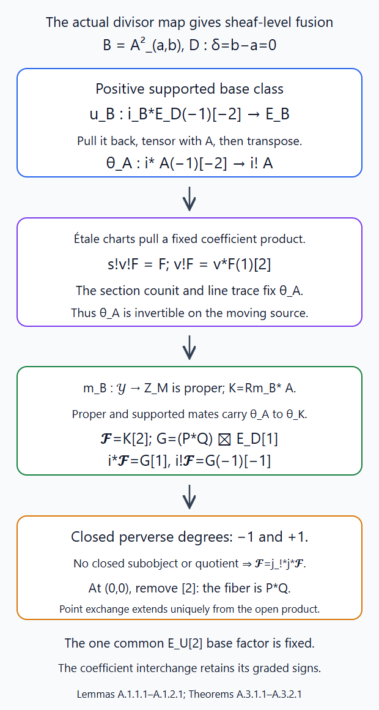
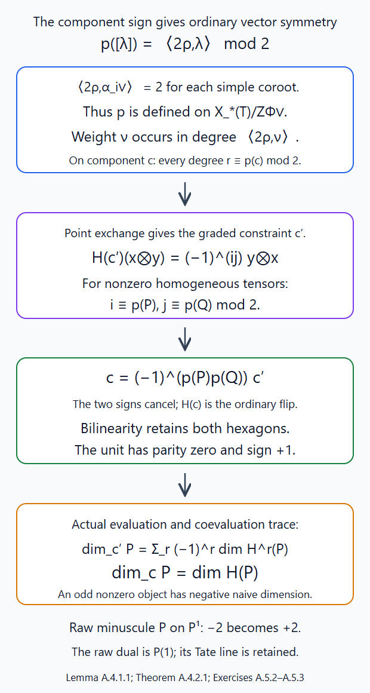
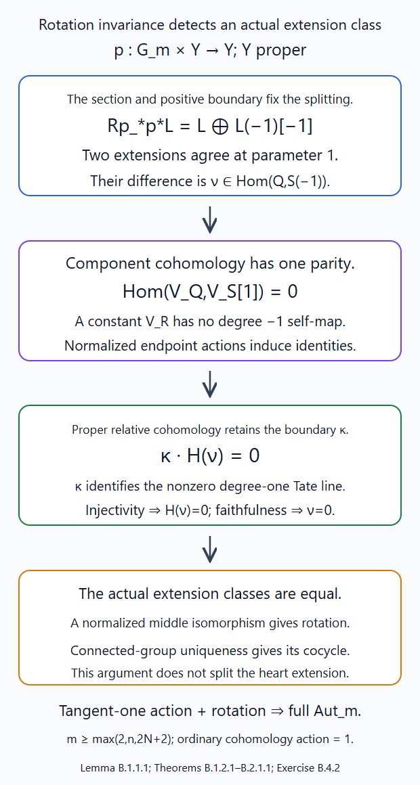
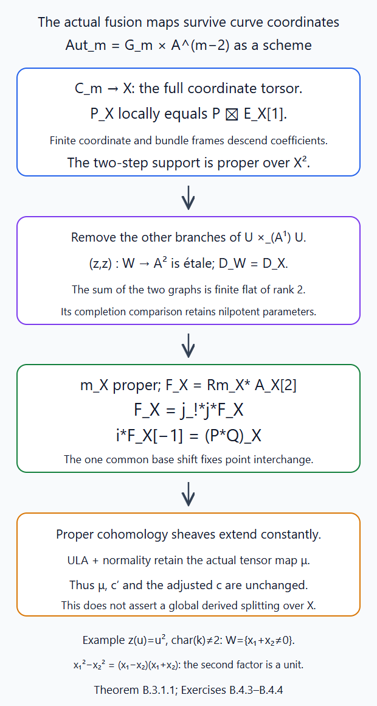

Fusion and the commutativity constraint
Written by GPT-6.1 Sol (OpenAI), October 2026. Public domain (CC0).
Two modifications at different points are independent. When their points collide, their common endpoint remembers convolution. We prove that the global sheaf connecting these situations is uniquely determined by its restriction to different points. Exchanging those points therefore constructs commutativity. Its action on cohomology includes the usual signs of graded tensor products; a component sign converts it to the symmetry of ordinary vector spaces.
Let \(G/\mathbb C\) be connected reductive and let \(\Lambda\) be a field of characteristic zero. All perverse sheaves have finite Schubert support. Sections 1–9 use these classical coefficients. Appendix A proves the fixed-affine-line fusion, graded interchange, component sign and categorical trace over every allowed algebraically closed ground field with finite rational coefficients. Appendix B constructs the full formal-coordinate action and proves independence of the curve, collision point and coordinate. Write \(\mathcal S_G\) for the classical Satake heart, \(O_\lambda=\operatorname{Gr}^{\lambda}\), \(Z_\lambda=\overline{O_\lambda}_{\mathrm{red}}\), and \(d_\lambda=\langle2\rho,\lambda\rangle\). The affine Grassmannian itself retains its full scheme structure; reduced Schubert supports are the varieties on which these classical sheaves live.
We use Beauville–Laszlo gluing and the moduli interpretation, §§1–3 and Theorem 8.1, for arbitrary-base moving modifications; Convolution and rigidity, §§1–6 and 9, for the bounded correspondences, semismallness and monoidal cohomology; and The Satake category, equations (2.4) and (6.1), for descent over contractible parameters and exact faithful cohomology. General IC parity and semisimplicity are not used. The strict extension criterion is proved in Intermediate extensions and intersection complexes, §1.
1. The moving endpoint functor and finite targets
For a smooth curve \(X\), the functor \(\operatorname{Gr}_{X^r}\) classifies ordered sections \(x_1,\ldots,x_r\), a \(G\)-bundle on \(X\), and a trivialization away from their graphs. Isomorphisms must respect that trivialization. A sum of graphs is a relative Cartier divisor, even when sections coincide or the parameter ring has nilpotents: in an étale coordinate its equation is a product of monic linear factors, each a nonzerodivisor. This is the moving-equation check in Lesson 3, §3.
On the locus of distinct sections, completed neighbourhoods split by the Chinese remainder theorem. Restrict the bundle and its trivialization to each neighbourhood; conversely glue these independent disc modifications to the trivial bundle on the common complement. The proved gluing equivalence makes these constructions inverse on every parameter algebra. Hence \[ \operatorname{Gr}_{X^r}|_{U_r} =\prod_{i=1}^r\operatorname{Gr}_X|_{U_r}. \tag{1.1} \] Here \(U_r\subset X^r\) is the all-distinct locus. On a partial diagonal, retain one section for each collision block. Repeated multiplicities leave the complement unchanged, and the completion filtrations of \(f\) and \(f^m\) are cofinal. The same moduli functor is therefore the Grassmannian for those distinct blocks. In particular the full diagonal of \(\operatorname{Gr}_{X^2}\) is \(\operatorname{Gr}_X\), not a two-step chain space. A global convolution space supplies the intermediate bundle separately.
We explain finite representability needed for its proper image. On \(X=\mathbb A^1_t\), with base \(B_r=\mathbb A^r\) and points \(a_i\), put \[ f(t)=\prod_i(t-a_i),\quad A=R[t],\quad \widehat A=\varprojlim A/f^qA. \] Monic division gives \[ \widehat A=R[[u]][t]/(f(t)-u),\qquad u=f(t). \tag{1.2} \] Precisely, divide a polynomial successively by the monic polynomial \(f\); its remainders have degree less than \(r\). Completeness then gives a unique expansion \(\sum_{q\ge0}f^q b_q(t)\), \(\deg b_q<r\). This proves (1.2), including over arbitrary rings. Thus \(\widehat A\) is finite free over \(R[[u]]\), with basis \(1,t,\ldots,t^{r-1}\), and \(u\) acts injectively.
For \(H=\operatorname{GL}(V)\), a bounded modification is a projective \(\widehat A\)-lattice \(L\) between \(f^M\widehat A^d\) and \(f^{-M}\widehat A^d\). Its finite quotient is projective over \(R\). Indeed regard these as lattices over \(R[[u]]\) of rank \(rd\), and apply the full splitting proof of Loop groups and the affine Grassmannian, Lemma 2.1. Encode the quotient in the ordinary finite Grassmannian of \[ f^{-M}\widehat A^d/f^M\widehat A^d. \] Stability under multiplication by \(t\) is a closed matrix condition and gives stability under the whole algebra (1.2). Conversely, let \(Q\) be such a finite projective quotient, with \(t\)-operator \(T\). It satisfies \(f(T)^{2M}=0\). The monic operator resolution \[ 0\to R[t]\otimes_R Q\xrightarrow{t-T} R[t]\otimes_R Q\to Q\to0 \tag{1.3} \] is exact: highest coefficients prove injectivity and division by \(t-T\) proves its cokernel. Schanuel's argument from Lemma 2.1 makes the inverse-image kernel a projective \(R[t]\)-module. Completion preserves this particular resolution without any blanket flat-completion assertion. In fact multiplication by \(u-f(T)\) on \(\widehat A\otimes_RQ\) is injective, by coefficient recurrence and nilpotence of \(f(T)\). Since \(f(t)-f(T)=(t-T)S(t,T)\), multiplication by \(t-T\) is injective too. Its cokernel evaluates \(t\) at \(T\) and \(u\) at \(f(T)\); the latter evaluation is finite on each formal series. It is exactly \(Q\). This proves the completed kernel is the desired projective lattice. We have constructed finite projective lattice stages over \(B_r\).
For general \(G\), take the faithful embedding \(G\subset H\) and equivariant open affine hull \(H/G\subset C\) proved in Lesson 2, Lemma 7.2. A reduction of an \(H\)-bundle is a section of its associated \(H/G\)-bundle. The given off-divisor trivialization prescribes that section after inverting \(f\). On an affine chart, extending it into the affine hull is exactly the vanishing of the finitely many negative \(u\)-coefficients of its finitely many coordinate series in the basis (1.2). Evaluation of its equations remains valid because \(u\) is a nonzerodivisor. This is the proof of Lemma 4.4, with that finite basis included.
The extension lands in the open quotient exactly when it does so modulo \(f\). If the pullback complement ideal is \(J\), the latter condition says \(J+(f)\) is the unit ideal. Thus \(J\) contains \(1-fb\), which is a unit by its geometric series, and the whole formal neighbourhood misses the complement. The modulo-\(f\) neighbourhood is finite over the parameter base. Its intersection with the complement has a finitely presented finite coordinate module. Take a finite presentation \(R^b\xrightarrow{D}R^a\to Q\to0\) of that coordinate module. It vanishes after a parameter change exactly where the size-\(a\) minors of \(D\) generate the unit ideal: over each local ring surjectivity is equivalent to full residue-field rank, and an invertible full minor gives a right inverse by row reduction. These minors define an open condition commuting with arbitrary base change. Hence reductions cut out a locally closed finite scheme in each lattice stage. The uniqueness of an extended section identifies these schemes on overlaps. They are separated and represent the bounded endpoint functor, with all nilpotents retained. This suffices below; properness will come from the bounded chain source.
Étale curve coordinates transport this construction to a neighbourhood of any finite collection of sections. The gluing equivalence identifies the resulting endpoint schemes on overlaps. Their maps are unique because the off-divisor trivialization is fixed. Thus the finite targets and the factorization maps are actual scheme constructions.
2. The proper moving chain
First take \(X=\mathbb A^1\). Fix supports \(X_i\), each a finite closed Schubert union containing the support of \(P_i\in\mathcal S_G\). A chain modifies the trivial bundle first at \(a_1\), then at \(a_2\), and so on, retaining all intermediate bundles and their relative off-point identifications.
The first support is \(X_1\times B_r\), using translation of the formal parameter. Restrict its universal bundle to a sufficiently deep finite disc around \(a_2\). Its frame scheme is a smooth finite jet torsor: smooth lifting modulo successive disc powers is the proof in Lesson 2, Lemma 4.1. Associate \(X_2\) to that torsor. Repeat with the resulting universal bundle at \(a_3\), and continue. This constructs a finite scheme \(\mathcal Y_r\) over \(B_r\). Each step is projective: the finite-stage Plücker embedding is jet-equivariant, and its representation descends to a vector bundle through the frame torsor. The associated closed support embeds in that projective bundle. Therefore \[ \tau_r:\mathcal Y_r\to B_r \quad\text{is proper}. \tag{2.1} \] Forgetting the intermediates gives \(m_r:\mathcal Y_r\to\operatorname{Gr}_{X^r}\). If the relative lattice bounds are \(N_i\), both bounds of the final lattice use the denominator \(\prod_i(t-a_i)^{N_i}\). Taking \(M\ge\sum_iN_i\) gives a symmetric \(f\)-bound. Thus \(m_r\) lands in one finite separated target of §1. Its graph in the product over \(B_r\) is closed; projecting that graph from the proper source proves \(m_r\) proper. This is also the graph/projection proof in AG-RG-S01, Corollary 7.B.
Descend the external product of the \(P_i\) using these finite frame torsors and their spherical equivariance. Denote its unshifted fibre normalization by \(\mathcal A_r\). Each pair of frame pullbacks has the same smooth shift; they cancel exactly as in Lesson 7, equation (2.1). On a local frame chart this complex is \[ (P_1\boxtimes\cdots\boxtimes P_r)\boxtimes\Lambda_{B_r}. \] Consequently \(\mathcal A_r[r]\) is perverse on the total source and \[ D\bigl(\mathcal A_r[r]\bigr) =\mathcal A_r(DP_1,\ldots,DP_r)[r]. \tag{2.2} \] The source strata are their relative orbit indices \((\alpha_1,\ldots,\alpha_r)\). Frame charts make their dimensions \(\sum_i d_{\alpha_i}+r\), and their ordinary sheaf degrees in \(\mathcal A_r[r]\) are at most the negative of that number. Those charts also make the source stratification Whitney and each stratum smooth over \(B_r\), by the product and orbit argument in Lesson 7, §4.
On \(U_r\), disjoint gluing makes the endpoint map an isomorphism on this support, and \[ (m_r,\mathcal A_r)|_{U_r} =\bigl(\mathrm{id},P_1\boxtimes\cdots\boxtimes P_r\bigr) \times U_r. \tag{2.3} \] On the full diagonal the chain is the local convolution chain. Its proper image is the iterated convolution with the associativity proved in Lesson 7, §6.
3. Strict bounds at every collision
We first extend the local semismall estimate to an \(r\)-step chain. For fixed source indices and target type \(\nu\), it is \[ 2\dim F_\nu\le\sum_i d_{\alpha_i}-d_\nu. \tag{3.1} \] Induct on \(r\). Partition the penultimate endpoint into its finitely many orbit types \(\delta\). The last two-endpoint fibre has dimension at most \((d_\delta+d_{\alpha_r}-d_\nu)/2\), by Lesson 7, equation (4.1). Over each of its first endpoints the prior-chain fibre has dimension at most \((\sum_{i<r}d_{\alpha_i}-d_\delta)/2\), by induction. The finite partition and fibre-dimension estimate bound that entire piece by their sum. Taking the maximum cancels \(d_\delta\) and proves (3.1). The identical argument works for every source-stratum closure and its open pieces.
Suppose a partial diagonal has \(b\) distinct collision blocks. Its base dimension is \(b\), and its codimension in \(B_r\) is \(c=r-b\). Factorization breaks the fibre into one local chain for each block, preserving the relative order within that block. For endpoint types \(\nu_1,\ldots,\nu_b\), (3.1) gives \[ 2\dim F\le\sum_i d_{\alpha_i}-\sum_jd_{\nu_j}. \tag{3.2} \] The target orbit-product stratum has dimension \(s=\sum_jd_{\nu_j}+b\).
Let \[ \mathcal F_r(P_1,\ldots,P_r) =Rm_{r*}\bigl(\mathcal A_r[r]\bigr). \tag{3.3} \] On a fibre piece in the indicated source stratum, compact-support cohomological dimension is at most twice its dimension. The ordinary-degree bound of §2 and (3.2) therefore give \[ H^k\bigl(\mathcal F_r(P_1,\ldots,P_r)_z\bigr)=0 \quad\text{for }k>-\sum_jd_{\nu_j}-r=-s-c. \tag{3.4} \] As in Lesson 7, §5, use compact supports on each possibly nonproper piece, assemble by the finite closed filtration of source indices, and only then replace compact by ordinary cohomology on the full proper fibre. Proper base change proves (3.4) for the actual stalk. Applying the same proof to (2.2) proves the dual bound. Thus \(\mathcal F_r\) is perverse. Over any collision, \(c\ge1\), and both its stalk and costalk bounds are strict relative to the boundary stratum.
These assertions may be tested on a finite Whitney refinement. A refinement lowers a stratum's dimension, so (3.4) remains at least as strong as the required upper bound; the same argument applies to its dual. Local constructibility on the orbit-product strata follows from factorization and the finite jet orbit charts. The resulting strict support tests are exactly the closed perverse inequalities excluding a boundary quotient and a boundary subobject. The extension construction and uniqueness in GL-PERV's intermediate-extensions lesson, equations (1.2)–(1.4), now give \[ \mathcal F_r(P_1,\ldots,P_r) =j_{r!*}\bigl((P_1\boxtimes\cdots\boxtimes P_r) \boxtimes\Lambda_{U_r}[r]\bigr). \tag{3.5} \] No decomposition theorem has been used. The extra strict degree comes from the positive collision codimension.
For \(r=2\), let \(i\) be the diagonal inclusion. Ordinary proper base change, with the shifts left visible, gives \[ i^*\mathcal F_2(P,Q)[-1] =(P*Q)\boxtimes\Lambda_{\mathbb A^1}[1]. \tag{3.6} \] At a selected diagonal point, ordinary restriction followed by \([-2]\) is \(P*Q\). These are the fibre and diagonal normalizations of fusion.
There are also coherent partial-fusion comparisons. For three points, let \(i_{12}\) impose \(a_1=a_2\). Collapse those first two modifications and take a sufficiently deep frame of their common endpoint. On that cover the collapse is the first local convolution map times the unchanged third support. Proper base change and projection formula identify its coefficient image with \((P*Q)\widetilde\boxtimes R\). Spherical equivariance of \(P*Q\) and finite frame descent make this identification global. Its total shift changes from \([3]\) to \([2]\), giving \[ i_{12}^*\mathcal F_3(P,Q,R)[-1]=\mathcal F_2(P*Q,R). \tag{3.7} \] The same argument on the last two relative modifications gives \(i_{23}^*\mathcal F_3(P,Q,R)[-1]=\mathcal F_2(P,Q*R)\). These identities hold over the whole partial diagonal, including its further collision. Repeated-divisor bounds can be placed in one common finite stage because the repeated polynomial divides a sufficiently large power of the distinct-block polynomial; the resulting lattice conditions are closed incidences, and Lesson 3, equation (8.2), identifies their full endpoint functors. Restrict both comparisons again to the full diagonal. Their identifications are the associator of Lesson 7, since both are proper composition on the same three-step chain and the same external-product maps. Thus fusion's binary grouping agrees with the already constructed convolution associator.
4. Local acyclicity in this family
We give the classical local acyclicity argument, including its compatibility with base change. It does not use general nearby-cycle t-exactness.
The source \(\mathcal Y_r\to B_r\) is proper and Whitney stratified, with every source stratum smooth over the base. The controlled-flow proof in Constructible complexes on algebraic varieties, Appendix I.6, makes it a stratum-preserving product over each sufficiently small base ball. Lesson 6, equation (2.4), descends the entire complex in that product, including its attaching maps. Locally the pair is therefore \[ (\mathcal Y_r,\mathcal A_r)= (Y_0,A_0)\times B_0. \tag{4.1} \] Pulling the base back preserves this product and its coefficient description.
Here local acyclicity means that specialization to a nearby parameter changes no local coefficient complex; universally means the same after every algebraic parameter base change, on the associated analytic spaces. To check it explicitly, test an analytic disc in such a changed base. Nearby cycles are computed by lifting its punctured disc to its universal cover and taking neighbourhood cochains. In the product (4.1), the lifted parameter is contractible and the complex is pulled back from \(Y_0\). The cochain comparison is the identity on the fibre coefficient complex. Taking the filtered colimit over fibre neighbourhoods gives its stalk. Thus specialization is an isomorphism, monodromy is the identity, and its cone of vanishing cycles is zero. The same calculation works around every point and after every base change. This proves universal local acyclicity for \(\mathcal A_r\) in this classical family.
It passes through this proper endpoint map. Here is the needed proof, rather than a general cycle citation. Write nearby cycles as \(i^*R(jp)_*p^*j^*\), where \(p\) is the pulled-back punctured-disc cover. Proper base change moves the proper image past \(p^*\) and past the special-fibre restriction \(i^*\). Composition of direct images moves it past \(R(jp)_*\). These are equalities of the actual maps of sheaf resolutions; hence \[ R\psi\, Rm_{r*}K=Rm_{r,0*}R\psi K \] with the specialization maps identified. Taking their cones gives the identical equality for \(R\phi\). Properness remains true after the parameter change. Apply this to (4.1): the source vanishing complex is zero, so the endpoint vanishing complex is zero too. Consequently (3.5) is the universally locally acyclic extension used for fusion. Its diagonal specialization is ordinary restriction, with the shifts in (3.6). General cycle constructibility or t-exactness is not an additional input to this calculation.
5. Exchanging points constructs commutativity
Let \(\sigma(a,b)=(b,a)\). The endpoint moduli problem depends on the union of its graphs, so it has an involution covering \(\sigma\). Over the distinct-point locus it interchanges the two factors. Equation (3.5) for \(r=2\) uniquely extends the derived external-product symmetry to an isomorphism \[ \mathcal F_2(P,Q)\longrightarrow\sigma^*\mathcal F_2(Q,P). \tag{5.1} \] Our normalization on that open locus is \((P\boxtimes Q)\boxtimes\Lambda_U[2]\). The map in (5.1) exchanges \(P,Q\) and uses the identity on the single constant base factor, pulled back by \(\sigma\). This convention matters: exchanging two separately shifted degree-one base factors would insert an extra minus sign, including for the unit. Using the one base factor gives the unit its identity symmetry.
Restrict (5.1) to a diagonal point and shift by \([-2]\). By (3.6) this is \[ c_{P,Q}:P*Q\xrightarrow{\sim}Q*P. \tag{5.2} \] It is natural in both objects. Enlarging supports or jet bounds extends the same open map; uniqueness of intermediate extension and proper base change identify the same diagonal map. Therefore (5.2) is defined on the entire bounded heart.
We verify all coherence, using the faithful monoidal functor already proved in Lesson 7, §9. Its construction transports cohomology in the proper source family \(\mathcal Y_2\) over the contractible base \(\mathbb A^2\). Proper composition identifies source cohomology with endpoint cohomology. On the distinct-point locus, (5.1) is exactly the derived tensor exchange. Thus, under that monoidal identification, \[ H(c_{P,Q})(v\otimes w)=(-1)^{ab}w\otimes v, \quad v\in H^a(P),\ w\in H^b(Q). \tag{5.3} \] The endpoint map (5.1) induces a map between the constant cohomology systems over the whole base; equality on the nonempty distinct locus proves equality everywhere. There is no chosen path or spectral-sequence splitting in (5.3).
The graded exchange squares to one because \(ab+ba\) is even. The two hexagons are the identities of signs \(a(b+c)=ab+ac\) and \((a+b)c=ac+bc\), with the usual tensor associator. The degree-zero unit has identity exchange. Lesson 7's cohomology comparisons respect the associator and unit. Hence applying \(H\) to the two sides of each categorical coherence diagram gives equal maps. Its faithfulness on heart morphisms makes the original maps equal. This proves symmetry, both hexagons and the unit identities for (5.2), with the given convolution associator. In particular \((\mathcal S_G,*,\mathbf1,c)\) is a rigid symmetric monoidal category, and graded cohomology is a symmetric monoidal functor with graded tensor signs.
6. Formal coordinates and arbitrary smooth curves
We prove the coordinate equivariance required to make the construction intrinsic. Let \(Y\) be a proper finite Schubert union with faithful lattice bound \(A\). Put \[ \mathscr A_r=\operatorname{Aut}(\mathbb C[t]/t^{r+1},(t)) =\{t\mapsto a_1t+\cdots+a_rt^r:\ a_1\ne0\}. \] As a variety it is \(\mathbb G_m\times\mathbb A^{r-1}\), so connected and smooth. If a formal substitution is the identity modulo \(t^{r+1}\), then for every integer \(j\ge-A\) \[ \phi(t)^j-t^j\in t^{j+r}R[[t]]. \] For negative integers this follows from the integral-coefficient binomial expansion of \((1+t^r b)^j\). Thus for \(r\ge2A\) substitution is the identity on \(t^{-A}V_O/t^AV_O\). Its action on the bounded stage factors through \(\mathscr A_r\), over every parameter ring.
It preserves spherical orbit indices: \(\phi(t^\lambda)=t^\lambda\lambda(\phi(t)/t)\), with the second factor integral, and substitution preserves integral loops. Choose sufficiently large \(m\) for the spherical action and \(r\ge m\). The finite semidirect group \(S=J_mG\rtimes\mathscr A_r\) is smooth and connected, acts on \(Y\), and preserves its orbit stratification.
For any \(P\) in our heart, parameter descent in Lesson 6, equation (2.4), gives local transport of the complexes \(s^*P\) on contractible coordinate balls in \(S\). This transports attaching maps as well as orbit local systems. We show that all its loop monodromy is trivial, including a possible extension automorphism. Let \(\pi:S\times Y\to S\), \(a(s,y)=sy\) and \(p(s,y)=y\). Before choosing any equivariance, the homeomorphism \[ \Phi(s,y)=(s,sy),\qquad\pi\Phi=\pi, \] and proper product base change give a canonical identification \[ R\pi_*a^*P=R\pi_*p^*P =\underline{R\Gamma(Y,P)}_S. \tag{6.1} \] On a parameter ball, normalized transport induces a map between these constant cohomology systems; its normalization is the identity, so it is the identity throughout that ball. Transport around a loop at the identity therefore gives a perverse automorphism \(b:P\to P\) with \(H^*(b)=1\). It is a morphism in the spherical heart, by the full-faithfulness assertion of Lesson 6, §2. Faithfulness in §6 forces \(b=1\). This controls all loops, including the infinite winding subgroup of \(\mathscr A_r\); an argument using only stalks would not exclude extension automorphisms.
The transports from the identity are consequently path independent and glue to \(p^*P\simeq a^*P\). Connected-group full faithfulness in GL-PERV's equivariant lesson, Theorem 1.1, gives uniqueness after this identity normalization. On \(S\times S\), the two composite structures have that same normalization, so uniqueness proves the cocycle; it also proves compatibility with every morphism. Its restriction to \(J_mG\) is the existing spherical structure. Increasing \(r,m\) gives the identical structure by uniqueness. We have proved automatic formal-coordinate equivariance without semisimplicity.
For a smooth curve \(C\), the \(r\)-jets of formal parameters along the diagonal form a \(\mathscr A_r\)-torsor. An étale coordinate \(z\) supplies the parameter \(z(y)-z(x)\). Changes of coordinate are exactly the substitutions above. Use the proved structure to glue \(P\boxtimes\Lambda_C[1]\) in these charts. This constructs a normalized spread \(P_C\) on \(\operatorname{Gr}_C\), independent of parameters and jet level. Its fibre cohomology transitions are identities by (6.1), even if the curve is not simply connected. The finite frame construction of §2, using these spreads, now makes the global convolution sheaf on any smooth curve.
Here is the precise étale comparison near collisions. For a separated étale map \(q:U\to V\), restrict \(U^r\) to the open excluding tuples of distinct marked points with the same image. This open contains its full diagonal. In the inverse image of each marked graph on \(V\), its selected graph on \(U\) is open and closed, since it is a section of a separated étale morphism. Remove the other branches. On the resulting neighbourhood of the graphs, the pulled-back sum of divisors is exactly their sum on \(U\). Each thickening of the selected divisor maps étale, universally injectively and surjectively to the target thickening; the étale open-immersion criterion of AG-FSE's étale local-structure lesson, Theorem 4.1, makes it an isomorphism. The completed and punctured neighbourhoods are therefore canonically isomorphic, including over rings with nilpotents.
Restriction to these neighbourhoods, followed by the uniquely effective gluing of Lesson 3, compares the moving endpoint and chain functors. The comparison commutes with partitions, diagonals and permutations, because the formal restriction maps do. It compares the coefficient spreads through their coordinate torsors. Proper base change compares their images. It preserves the strict boundary extension tests, so (3.5) and its maps compare by uniqueness of intermediate extension. Finally diagonal restriction commutes with these comparisons. Étale coordinates compare any pointed smooth curve locally with \(\mathbb A^1\). Their transition substitutions and the just-proved cocycles show that the resulting local fusion constraint is independent of both the coordinate and the curve, under the identification by its formal disc.
7. Component parity and the sign modification
The parity \[ \epsilon(\lambda)=\langle2\rho,\lambda\rangle\pmod2 \] descends to \(X_*(T)/\mathbb Z\Phi^\vee\). Indeed \(\langle2\rho,\alpha_i^\vee\rangle=2\) for every simple coroot: a simple reflection permutes positive roots other than its own and sends that root to its negative, giving this pairing. Integral coroot combinations therefore pair evenly. The component homomorphism of Lesson 4, §5, identifies this quotient with components and is additive on products. Hence \(\epsilon\) is a component homomorphism and convolution adds it. The dominance order compares only coweights whose difference is an integral positive coroot combination, so comparable types have the same parity.
Every object splits canonically into its even and odd component supports. Its global cohomology has the same parity as its component. This uses global weight concentration, not an IC-stalk parity claim: Lesson 5 proves \[ H^k(P)=\bigoplus_{\langle2\rho,\nu\rangle=k}F_\nu(P). \tag{7.1} \] If the support has component parity \(e\), a nonzero \(F_\nu(P)\) lies on that same component, so \(k\equiv e\). Formula (7.1) holds for every perverse object by that lesson's proved exactness and concentration.
For homogeneous component objects define \[ c'_{P,Q}=(-1)^{\epsilon(P)\epsilon(Q)}c_{P,Q}, \tag{7.2} \] and extend by their canonical direct-sum decomposition. This still squares to one. Both hexagons hold because component parity adds: the extra exponents satisfy the same bilinear identities as those in §5. Under cohomology the two signs cancel by (7.1), leaving the ordinary exchange \(v\otimes w\mapsto w\otimes v\). Thus \[ H^*:(\mathcal S_G,*,\mathbf1,c')\longrightarrow \operatorname{Vect}^{\mathrm{fd}}_\Lambda \] is an exact faithful symmetric monoidal functor when its grading is forgotten. Its monoidal maps are precisely those of Lesson 7; only the category's symmetry changed.
The categorical dimension is the trace formed from coevaluation, symmetry and evaluation. Under the naive constraint choose a homogeneous basis of graded cohomology. Coevaluation pairs each basis vector with its dual of opposite degree; the graded exchange contributes \((-1)^k\) to the evaluation of a degree-\(k\) basis vector. Consequently \[ \dim_c P=\sum_k(-1)^k\dim H^k(P) =(-1)^{\epsilon(P)}\dim H^*(P) \tag{7.3} \] for a homogeneous object. With (7.2) its self-exchange gains \((-1)^{\epsilon(P)}\), and \[ \dim_{c'}P=\dim H^*(P). \tag{7.4} \] These are direct trace computations using the rigidity of Lesson 7, not an appeal to a dimension criterion. In particular they apply to \(IC_\lambda\). A nonzero object has nonzero cohomology by faithfulness, so the modified dimensions are positive integers. The sign is required if this same cohomology functor is to preserve the ordinary vector-space symmetry on an odd component.
8. Tori and the minuscule examples
For \(G=\mathbb G_m\), the full two-point functor is the line-bundle modification functor of §1. On a formal completed divisor it consists of projective rank-one lattices \(L\subset\widehat A[1/f]\) with a specified punctured identification. The finite stable-quotient description in §1 gives its full bounded schemes. They retain infinitesimal families: over the dual numbers, \((1+\eta f^{-1})\widehat A\), \(\eta^2=0\), is a lattice with inverse generator \(1-\eta f^{-1}\), and is different from the standard lattice because its generator is not an integral unit.
On complex geometric points, distinct points carry integers \((m,n)\), their local line indices. The full diagonal carries one integer \(m+n\). The section for those indices is, over every parameter ring, \[ L_{m,n}=(t-a)^m(t-b)^n\widehat A. \tag{8.1} \] Negative exponents are permitted after inverting \(f\). At \(a=b\) it is \((t-a)^{m+n}\widehat A\). Sections with different pairs but the same sum thus meet along the diagonal; the full global ind-scheme is not a disjoint union of copies of the whole base indexed by pairs. For the two skyscrapers, the bounded chain source is the base itself and its sheaf is \(\Lambda_{\mathbb A^2}[2]\). Fusion gives \[ \delta_m*\delta_n=\delta_{m+n},\qquad c_{m,n}=1. \tag{8.2} \] The scalar factors in (8.1) commute, and each skyscraper has degree-zero cohomology. All torus components have \(\epsilon=0\), so no modification of this symmetry occurs.
For \(\operatorname{PGL}_2\), the primitive positive coweight \(\omega^\vee\) has orbit \(\mathbb P^1\) of dimension one. Its IC is \(P=\Lambda_{\mathbb P^1}[1]\), with one cohomology generator in each degree \(-1,1\). Both are odd, and therefore \[ \dim_cP=-2,\qquad\dim_{c'}P=2. \tag{8.3} \] Lesson 7 explicitly constructs \(P*P=IC_{2\omega^\vee}\oplus IC_0\). Its total cohomology has dimensions \(1,2,1\) in degrees \(-2,0,2\); this is consistent with the tensor square and does not require general semisimplicity.
For \(\operatorname{GL}_2\), let \(P=IC_{(1,0)}\) and choose generators \(v_-\in H^{-1}(P)\), \(v_+\in H^1(P)\). The naive symmetry on its tensor square is the negative of the ordinary flip. Explicitly, \[ \begin{aligned} c(v_-\otimes v_-)&=-v_-\otimes v_-,& c(v_+\otimes v_+)&=-v_+\otimes v_+,\\ c(v_-\otimes v_+)&=-v_+\otimes v_-,& c(v_+\otimes v_-)&=-v_-\otimes v_+. \end{aligned} \tag{8.4} \] The three-dimensional symmetric-tensor subspace is its minus eigenspace; the line \(\Lambda(v_-\otimes v_+-v_+\otimes v_-)\) is its plus eigenspace. Since \(\epsilon(P)=1\), (7.2) reverses both eigenvalues.
The explicit decomposition of Lesson 7 is \[ P*P=IC_{(2,0)}\oplus IC_{(1,1)}. \tag{8.5} \] Its two simples have no maps between them, and each simple's endomorphisms are scalars, by restriction to its rank-one open orbit. Thus the exchange is scalar on each summand. Degree \(-2\) belongs to the first summand and (8.4) makes its scalar \(-1\). Its three-dimensional cohomology is consequently the symmetric-tensor subspace; the remaining one-dimensional summand has scalar \(+1\). For \(c'\), the largest IC has scalar \(+1\) and the central point IC has scalar \(-1\). The ordinary antisymmetric line is precisely the latter summand's cohomology. This computation explains the sign on actual geometric summands rather than inferring it merely from their dimensions.
9. Exercises with solutions
Exercise 9.1 (easy). Describe the two-point Grassmannian for \(\mathbb G_m\), its distinct and coincident geometric fibres, and fusion of two skyscrapers. Include the distinction between the full functor and its geometric points.
Solution. The objects are line bundles on the curve with a specified trivialization off the two graphs. By gluing they are projective rank-one lattices in the completed divisor's localized ring. On the affine line use (1.2) and take all symmetric \(f\)-bounds. Each bound is represented by finite Grassmannian quotients stable under the \(t\)-operator, with its scheme equations as in §1; these bounds exhaust the full functor. At distinct complex points the completion is a product of two power-series rings, and a rank-one lattice in each is a parameter power times an integral unit. The two geometric indices are therefore \((m,n)\in\mathbb Z^2\). On the diagonal the completion is one power-series ring, by cofinality of the squared-parameter filtration, and its index is a single integer. Formula (8.1) specializes that integer to \(m+n\). The lattice \((1+\eta f^{-1})\widehat A\) exhibits a nontrivial infinitesimal point, so the geometric description does not replace the full functor. For the skyscrapers the moving chain is \(\mathbb A^2\) and its normalized sheaf is \(\Lambda[2]\); diagonal restriction with \([-2]\) gives \(\delta_{m+n}\). The commutativity map is the identity because the scalar product and degree-zero tensor flip are identities. \(\square\)
Exercise 9.2 (easy). Compute both categorical dimensions of the minuscule \(\operatorname{PGL}_2\) IC directly from the trace.
Solution. Its graded cohomology has basis \(v_-,v_+\) in degrees \(-1,1\). Its graded dual has the dual basis in the opposite degrees. Coevaluation gives the sum of the two corresponding basis–dual tensors, and evaluation returns one on each after their exchange. The naive exchange contributes \((-1)^{-1}=(-1)^1=-1\) to the two terms, so the trace is \(-2\). The object is in the odd component, and the modified self-exchange multiplies both terms by another \(-1\). The trace becomes \(+2\). The strong monoidal cohomology functor carries the geometric evaluation and coevaluation to these duality maps, so these are the categorical traces. \(\square\)
Exercise 9.3 (medium). Compute the exchange eigenvalues on the two \(\operatorname{GL}_2\) summands in (8.5), before and after modification.
Solution. Both basis vectors of \(H(P)\) are odd. Thus the naive map is \(-\mathrm{flip}\). Its minus eigenspace has basis \(v_-\otimes v_-\), \(v_-\otimes v_++v_+\otimes v_-\), \(v_+\otimes v_+\); its plus eigenspace is the line generated by \(v_-\otimes v_+-v_+\otimes v_-\). The exchange is scalar on each of the two distinct simples in (8.5). The degree-minus-two vector lies in \(IC_{(2,0)}\), forcing its scalar to \(-1\); all three of that IC's cohomology vectors occupy the minus eigenspace. The point IC occupies the remaining plus line. Multiplication by the odd–odd sign \(-1\) makes their respective eigenvalues \(+1,-1\). This is the ordinary symmetric/antisymmetric decomposition of a two-dimensional vector space. \(\square\)
Exercise 9.4 (medium). Prove that comparable coweights have the same parity, and that this parity gives the signs in both hexagons.
Solution. If \(\mu\le\lambda\), then \(\lambda-\mu=\sum_i n_i\alpha_i^\vee\), with integral \(n_i\ge0\). Pairing with \(2\rho\) gives \(2\sum_i n_i\), an even integer. The same computation for arbitrary integral coroot combinations makes parity well-defined on the component quotient. Its additivity follows from the component homomorphism. For component parities \(e,f,g\), the sign for exchanging the first object with the other two is \((-1)^{e(f+g)}=(-1)^{ef}(-1)^{eg}\); the other hexagon is \((-1)^{(e+f)g}=(-1)^{eg}(-1)^{fg}\). The double exchange has exponent \(ef+fe\), hence sign one. Since the naive maps already satisfy both hexagons and involutivity, these scalar identities prove them for the modified maps. \(\square\)
Exercise 9.5 (hard). Prove that the fusion constraint is independent of the smooth pointed curve and formal coordinate, without assuming general IC parity or semisimplicity.
Solution. Choose finite bounds for the objects. The substitution estimate of §6 makes their coordinate actions factor through a finite \(\mathscr A_r\); the finite group \(J_mG\rtimes\mathscr A_r\) is connected and preserves their orbit strata. Parameter descent gives normalized local transport of the whole perverse complex. The proper action homeomorphism identifies its total cohomology system with the constant system, so every transport loop acts trivially on cohomology. Exact faithfulness from Lesson 6 makes its perverse automorphism the identity, including any possible extension automorphism. Thus transport descends to the unique coordinate-equivariant structure and its cocycle, without semisimplicity.
An étale coordinate at the chosen curve point identifies a neighbourhood with selected formal branches of the affine line. For several nearby sections exclude distinct sections with equal coordinate images. The selected section in each inverse-image graph is open and closed; removing other branches makes all divisor thickenings isomorphic to the affine-line thickenings, by the étale open-immersion criterion. This gives a comparison on completed and punctured neighbourhoods over every parameter ring. Gluing with the prescribed trivial complement compares both the endpoint and chain functors. The finite-coordinate structures compare their descended coefficient complexes. Proper base change then compares the global images, whose strict boundary bounds identify them with the same intermediate extension. Their open exchange maps agree, so uniqueness identifies their extensions, and diagonal restriction identifies the local constraint. Two choices of coordinates differ by a coordinate substitution; its proved cocycle identifies those comparisons on overlaps. Two pointed curves compare with the affine line and hence with each other. All comparisons commute with composition, since they are restriction and uniquely effective gluing. This proves the asserted independence. \(\square\)
Appendix A. Actual rational fusion and the component-adjusted symmetry
Let \(k\) be algebraically closed, let \(\ell\) be invertible in \(k\), and let \(E/\mathbf Q_\ell\) be finite. Use the genuine rational Satake heart and the actual convolution, rigidity and graded tensor-cohomology comparisons proved in Convolution and rigidity, Appendices A–C. The construction here uses the fixed coordinate \(t\) on the affine line. It proves sheaf-level fusion, the graded interchange and the component adjustment giving the ordinary vector symmetry. Appendix B supplies the rational comparison for arbitrary curves and full formal coordinates.
Labels A.1–A.5 refer to this appendix. Links labeled Lesson 7 refer to its earlier rational convolution and tensor-cohomology proofs; links labeled Lesson 6 refer to its supported orientation, genuine category and exact faithful cohomology. Bare coefficient-operation locators M, O, P and Q are to Semi-infinite orbits and weight functors. The full monic endpoint construction is already in §1 above; its formal lattice, gluing and affine-hull inputs are proved in Loop groups and the affine Grassmannian, Lemmas 2.1,4.4,7.2, and Beauville–Laszlo gluing and the moduli interpretation, §§1–3 and Theorem 8.1. The component invariant is proved in Orbits and Schubert varieties, §5.
For freely accessible comparison reading, see Mirković–Vilonen, Geometric Langlands duality and representations of algebraic groups over commutative rings, §§5–6, and Zhu, An introduction to affine Grassmannians and the geometric Satake equivalence, §§5.2,5.4. The supported divisor map below is defined before checking product charts, and the point interchange fixes the single common base factor \(E_U[2]\). The trace calculation proves directly why an odd object's negative naive dimension cannot be carried to an ordinary vector dimension.
A.1. Actual divisor restriction for the moving coefficient charts
The following argument uses the specific coefficient charts of the moving source. It proves their divisor comparison directly from smooth trace and proper adjunction. It does not invoke a general theorem asserting purity for an arbitrary rational ULA complex.

Lemma A.1.1.1 defines \(\theta_A\) by pulling the positive base class, tensoring the coefficient and transposing its supported counit. Smooth line transitivity identifies that map on the fixed-product charts; the actual ordinary and supported proper mates carry it to the endpoint image. Lemma A.1.2.1 uses closed perverse degrees \(-1,+1\) to prove the strict extension. Theorem A.3.1.1 identifies its diagonal fiber with convolution, and Theorem A.3.2.1 extends point exchange with its fixed common base normalization. Editable SVG source.

A.1.1. The supported class and its product-chart comparison
Put \(B=\mathbf A^2_{a,b}\), \(D=\{b-a=0\}\), and let \(i_B:D\hookrightarrow B\). For a separated finite-type \(q:Y\to B\), write \(i_Y:Y_D\hookrightarrow Y\). The positive supported class of this base divisor gives the actual morphism \[ u_B:i_{B*}E_D(-1)[-2]\longrightarrow E_B. \tag{A.1.1.1} \] In coordinates \((a,\delta=b-a)\), it is the zero-section counit for the trivial line over \(\mathbf A^1_a\). Its normalization is Lesson 6, Lemma A.1.1.1 and the Lesson 6, relative Kummer comparison A.1.2.1. These are maps with support, before forgetting that support.
Actual closed pullback GL-SAT-05 M.6.1.2 pulls (A.1.1.1) to \(u_Y:i_{Y*}E_{Y_D}(-1)[-2]\to E_Y\). For bounded rational constructible \(A\) on \(Y\), tensoring it with this map, and using the actual closed projection identity O.1.2.1, defines \[ i_{Y*}i_Y^*A(-1)[-2]\longrightarrow A. \tag{A.1.1.2} \] Its transpose in the supported adjunction is the specified divisor comparison \[ \theta_{Y,A}:i_Y^*A(-1)[-2]\longrightarrow i_Y^!A. \tag{A.1.1.3} \] It is natural in \(A\), fixed by the positive base orientation, and compatible with étale restriction. The map is defined without a local product assumption.
Lemma A.1.1.1. Suppose an étale cover \(U_j\to Y\) has étale maps over \(B\), \[ h_j:U_j\longrightarrow X_j\times B, \] and specified coefficient identifications \(A|_{U_j}=h_j^*\operatorname{pr}_{X_j}^*F_j\) for bounded rational constructible \(F_j\) on separated finite-type \(X_j\). Then (A.1.1.3) is an isomorphism. If \(m:Y\to Z\) is proper over \(B\), its actual proper image \(K=Rm_*A\) has the same isomorphism \[ \theta_{Z,K}:i_Z^*K(-1)[-2]\xrightarrow{\sim}i_Z^!K. \tag{A.1.1.4} \] Here \(i_Z:Z_D\hookrightarrow Z\), and both maps are those transposed from the pulled base class (A.1.1.1). No product charts on \(Z\) are required.
Proof. First work on \(X\times B\). Change coordinates from \((a,b)\) to \((a,\delta)\), and put \(T=X\times\mathbf A^1_a\). Let \(v:T\times\mathbf A^1_\delta\to T\) be the line projection and \(s:T\hookrightarrow T\times\mathbf A^1\) its zero section. The coefficient is \(v^*F_T\), where \(F_T\) is the pullback of \(F\) to \(T\). Smooth trace and coherent exceptional transitivity, GL-SAT-05 P.2.4.1, give \[ v^!F_T=v^*F_T(1)[2],\qquad s^!v^!F_T=(vs)^!F_T=F_T. \] Cancel the invertible Tate line and the shift, using the counit-defined invertible-line comparison P.3.4.1. Thus \[ s^!v^*F_T=F_T(-1)[-2]. \tag{A.1.1.5} \] This also specifies the section counit: after applying \(Rv_!\) its composite with the line trace is the identity of \(F_T\), by transitivity for \(vs=1\).
We check that (A.1.1.5) inverts the defined map (A.1.1.3), rather than a map with an undetermined scalar. The class (A.1.1.1), pulled to \(T\), is the positive zero-section counit. Tensor it with \(v^*F_T\). The actual projection comparison O.4.3.1 identifies its image under the line trace with \(1_{F_T}\) tensored with the trace of that positive point class, which is \(1\). Under \(Rv_!\dashv v^!\), this composite corresponds to the identity on \(Rv_!s_*F_T=F_T\). Its transpose is therefore exactly the section counit for \(v^!F_T\); canceling the Tate line gives (A.1.1.2) for \(v^*F_T\). Transposing under \(s_*\dashv s^!\) identifies (A.1.1.3) with (A.1.1.5)'s inverse. This uses the trace-normalized map, not only the displayed shifts.
Pull this computation along \(h_j\). Étale pullback preserves the supported comparison and its counit: the slice restriction has exact extension-by-zero left adjoint and therefore preserves injective module resolutions for the supported right adjoint. Equivalently it is the étale, relative-dimension-zero instance of the actual exceptional and dual exchanges P.3.3.1. The closed pullback square preserves (A.1.1.1) and the closed projection identity, so the resulting comparison is exactly \(\theta_{Y,A}\) on \(U_j\). It is invertible there. These charts are a conservative étale cover; the cone of the constructible comparison is consequently zero. This proves the first assertion and also shows that overlapping coefficient identifications cannot change its normalization: the map was defined globally by the base class.
For the second assertion, actual proper base change O.4.1.1 gives \[ i_Z^*Rm_*A=Rm_{D*}i_Y^*A. \tag{A.1.1.6} \] There is also the actual supported-image comparison \[ i_Z^!Rm_*A=Rm_{D*}i_Y^!A. \tag{A.1.1.7} \] To prove it, test against a constructible \(H\) on \(Z_D\). The ordinary pullback adjunction, closed pullback M.6.1.2 and the supported adjunction give, in order, \[ \begin{aligned} R\operatorname{Hom}(H,i_Z^!Rm_*A) &=R\operatorname{Hom}(i_{Z*}H,Rm_*A)\\ &=R\operatorname{Hom}(m^*i_{Z*}H,A)\\ &=R\operatorname{Hom}(i_{Y*}m_D^*H,A)\\ &=R\operatorname{Hom}(m_D^*H,i_Y^!A)\\ &=R\operatorname{Hom}(H,Rm_{D*}i_Y^!A). \end{aligned} \] Enhanced Yoneda supplies (A.1.1.7). These identifications retain the counits, since each line is its stated adjunction or the actual closed pullback map.
Under (A.1.1.6)–(A.1.1.7), the map \(\theta_{Z,K}\) is \(Rm_{D*}\theta_{Y,A}\). Indeed its defining supported counit tensors the proper image with the pulled base class. Proper projection rewrites that tensor as the proper image of the coefficient tensored with the same class on \(Y\). The closed pullback identity identifies the support objects; the image counit and the closed counit are the two compositions in the preceding mapping calculation. Transposing them gives exactly \(Rm_{D*}\theta_{Y,A}\). Derived proper image preserves isomorphisms, so the already proved isomorphism gives (A.1.1.4). Every comparison is canonical and natural in coefficient maps and proper image composition. □
A.1.2. The strict divisor criterion for intermediate extension
Lemma A.1.2.1. Let \(i:Z_D\hookrightarrow Z\) and \(j:Z_U\hookrightarrow Z\) be a closed-open pair of separated finite-type schemes. Let \(F\) be bounded rational constructible. Suppose \[ j^*F\text{ is perverse},\qquad i^*F[-1]\text{ is perverse},\qquad i^!F\simeq i^*F(-1)[-2]. \tag{A.1.2.1} \] Then \(F\) is perverse and is the unique intermediate extension of its specified open restriction: \[ F=j_{!*}j^*F. \tag{A.1.2.2} \] It has no nonzero perverse subobject or quotient supported on \(Z_D\). The identification is natural in open comparisons which extend to such objects.
Proof. Write \(G=i^*F[-1]\), a perverse object by hypothesis. Thus \(i^*F=G[1]\) lies in perverse degrees at most \(-1\). The exceptional comparison gives \(i^!F=G(-1)[-1]\), in perverse degrees at least \(1\). A Tate line preserves the support conditions for the perverse structure and has degree zero.
The closed-open upper support criterion puts \(F\) in the upper perverse half: its restrictions to both pieces are in that half, and ordinary closed/open inverse image preserves the cohomology support calculations. The lower criterion is the corresponding statement for \(i^!\) and \(j^*\); it follows by dualizing the upper criterion with the actual dual exchanges and biduality. Hence \(F\) is perverse. These are the perverse gluing conditions proved in the earlier programme lesson Intermediate extensions and intersection complexes, §1.
Any perverse object supported on the closed part is \(i_*S\) for a perverse \(S\), by the actual closed equivalence and closed-open triangle. A map from it to \(F\) is \[ \operatorname{Hom}(i_*S,F)=\operatorname{Hom}(S,i^!F)=0, \] by perverse orthogonality from degrees at most zero to degrees at least one. A map from \(F\) to it is \[ \operatorname{Hom}(F,i_*S)=\operatorname{Hom}(i^*F,S)=0, \] by orthogonality from degrees at most minus one to degrees at least zero. This proves the stated absence of closed subobjects and quotients.
For completeness, use the actual open unit and counit to obtain \[ {}^pH^0j_!j^*F\longrightarrow F \longrightarrow{}^pH^0Rj_*j^*F. \tag{A.1.2.3} \] The cokernel of the first map and the kernel of the second restrict to zero on the open, since those restrictions are identities and open restriction is perverse exact. They are therefore closed supported. The preceding vanishing forces the first map to be onto and the second injective. The image of their composite is exactly \(F\), which is the definition of \(j_{!*}j^*F\). It identifies its open restriction with the specified identity.
Intermediate extension is fully faithful on these open perverse objects, by the same image and adjunction argument: a map is extended by the open image construction, and a map restricting to zero has image supported on the closed part, hence zero. Therefore any extension of a given open comparison between objects satisfying (A.1.2.1) is unique, and the identification (A.1.2.2) is natural. This proof never identifies two global derived morphisms merely because their restrictions to an étale cover agree; the actual supported comparison is supplied separately by Lemma A.1.1.1. □
A.2. A finite global endpoint for the moving convolution source
A.2.1. The uniform bound and the actual proper morphism
Lemma A.2.1.1. For the two-point source \(\mathcal Y\) of Lesson 7, Theorem C.4.1.1, choose faithful matrix bounds \(N_1,N_2\) on the two supports. There is a separated finite-type endpoint scheme \(Z_M\to B=\mathbf A^2\), with \(M=N_1+N_2\), and an actual proper map over \(B\) \[ m_B:\mathcal Y\longrightarrow Z_M. \tag{A.2.1.1} \] Its endpoint functor retains all parameter algebras and nilpotents. Off the diagonal it is the product endpoint of the two independent modifications; on the diagonal it is the local convolution endpoint. Increasing \(M\) gives the usual closed finite support comparison. One common such stage can be chosen for both input orders, and swapping \(a,b\) acts on it by relabeling the two sections.
Proof. Write \(f_1=t-a\), \(f_2=t-b\), and \(f=f_1f_2\). The all-ring monic moving-endpoint construction in §1 of this lesson gives the finite separated endpoint stage at bound \(f^{\pm M}\). We spell out the inputs that ensure its applicability here. Successive monic division identifies \[ \widehat {R[t]}_{(f)}=R[[u]][t]/(f(t)-u),\qquad u=f(t), \tag{A.2.1.2} \] with basis \(1,t\) over \(R[[u]]\). A bounded projective matrix lattice is encoded in the finite projective Grassmannian of \(f^{-M}\widehat A^d/f^M\widehat A^d\); stability under \(t\) is a closed matrix condition. The splitting and operator-kernel calculation of that section, using GL-SAT-02 Lemma 2.1 and the monic resolution \(t-T\), recover exactly the full projective lattice from the finite quotient. No assertion about flat completion of an arbitrary module is used. For \(G\), the faithful quotient's equivariant affine hull, its negative-coefficient equations and its modulo-\(f\) open-locus minors cut out a locally closed finite stage. Their all-ring argument in that section uses GL-SAT-02 Lemmas 4.4 and 7.2 and the gluing equivalence of GL-SAT-03 §§1–3. It uses no complex topology or characteristic-zero exponential. Thus the same construction applies over the present allowed ground field and gives the asserted separated finite-type \(Z_M\).
The universal last bundle on \(\mathcal Y\times\mathbf A^1_t\) and its away-from-\(f\) frame define the endpoint transformation. Its bound holds on every parameter algebra. In the faithful representation write \(\mathcal E_0\) for the trivial bundle, \(\mathcal E_1\) for the first modification and \(\mathcal E_2\) for the last. Through their specified away frames, the first support bound gives \[ f_1^{N_1}\mathcal E_0\subset\mathcal E_1 \subset f_1^{-N_1}\mathcal E_0. \] The relative second support gives \[ f_2^{N_2}\mathcal E_1\subset\mathcal E_2 \subset f_2^{-N_2}\mathcal E_1. \] These inclusions are checked on finite formal-frame charts and agree on overlaps because the relative lattice conditions are invariant under frame change. The gluing equivalence makes them inclusions of the global bundles, not only of geometric lattices. Composing gives the bounds with \(f_1^{N_1}f_2^{N_2}\). Since \(M\geq N_1,N_2\), multiplication by the remaining nonnegative powers of the two monic polynomials gives \[ f^M\mathcal E_0\subset\mathcal E_2 \subset f^{-M}\mathcal E_0. \tag{A.2.1.3} \] All inclusions retain base change, by their finite quotient and bundle descriptions. They place the endpoint in the represented \(Z_M\), so Yoneda gives the actual morphism (A.2.1.1).
Lesson 7, Theorem C.4.1.1 proves \(\mathcal Y\to B\) proper. The target \(Z_M\to B\) is separated. The graph of \(m_B\) is therefore closed in \(\mathcal Y\times_BZ_M\); its projection to \(Z_M\) is the base change of the proper map \(\mathcal Y\to B\). Their composite \(m_B\) is proper. This establishes properness without requiring \(Z_M\) itself to be proper over \(B\).
On \(a\ne b\), the Chinese remainder and away-frame gluing give the two independent endpoint modifications, as in GL-SAT-03 Theorem 8.1. On \(a=b\), the \(f\)-adic and \((t-a)\)-adic filtrations are cofinal since \(f=(t-a)^2\); the endpoint is the same local final bundle. Translation by \(a\) identifies its finite stage with the corresponding local stage times the diagonal parameter. This equality is on the full moduli functor. Enlargement of bounds is the same finite lattice/support inclusion. Finally \(f_1f_2=f_2f_1\), so the finite target equations and bounds are invariant under relabeling the two points. This supplies the common stage and its swap, including on the diagonal over arbitrary algebras. □
A.3. Rational sheaf-level fusion and the graded symmetry
A.3.1. The proper family is the strict intermediate extension
Theorem A.3.1.1. Let \(P,Q\) be genuine finite-\(E\) rational Satake objects. On a common finite endpoint stage of Lemma A.2.1.1 put \[ K_{P,Q}=Rm_{B*}\mathcal A,\qquad \mathcal F_{P,Q}=K_{P,Q}[2], \tag{A.3.1.1} \] where \(\mathcal A\) is the unshifted moving coefficient of Lesson 7, Theorem C.4.1.1. The complex \(K_{P,Q}\) is ULA over \(B\). The shifted \(\mathcal F_{P,Q}\) is perverse and is the intermediate extension of the factorized off-diagonal coefficient: \[ \mathcal F_{P,Q}=j_{!*}\bigl((P\boxtimes Q)\boxtimes E_U[2]\bigr). \tag{A.3.1.2} \] Here the open sheaf is viewed on its two independent finite endpoint supports in \(Z_M|_U\). Along the diagonal \(i:Z_{M,D}\hookrightarrow Z_M\), its actual ordinary and exceptional restrictions satisfy \[ i^*\mathcal F_{P,Q}[-1]=(P*Q)\boxtimes E_D[1], \qquad i^!\mathcal F_{P,Q}[1]=(P*Q)\boxtimes E_D(-1)[1]. \tag{A.3.1.3} \] The finite diagonal support inclusions are understood in these formulas. In particular restriction at \((a,b)=(0,0)\), followed by \([-2]\), is exactly \(P*Q\). The comparisons are natural and independent of support/frame enlargement.
Proof. The source and coefficient are those already constructed in Lesson 7, Theorem C.4.1.1, and the proper endpoint is Lemma A.2.1.1. The finite étale coefficient charts are pullbacks of the fixed \(P\boxtimes Q\) on \(X_1\times X_2\) times \(B\), with their common frame shifts canceled. One integral model on that fixed product gives precisely the local finite ULA models used in Lesson 7, Theorem C.2.2.1. Apply that theorem to the proper map \(m_B\), with target \(Z_M\to B\), to obtain the actual ULA assertion for \(K_{P,Q}\). Proper image makes it bounded rational constructible.
Off the diagonal the specified first bundle frame trivializes its second disc. Full endpoint factorization identifies the source with the ordinary product of the two supports and \(m_B\) with its product endpoint inclusion. Thus the off-diagonal restriction in (A.3.1.2) is the actual proper comparison, and is perverse by Lesson 7, Theorem A.4.1.1 and exact closed extension.
On \(D\), the coordinate \(t-a\) identifies the moving source and coefficient with the local twisted source and twisted coefficient times \(D\). Formula (Lesson 7, (C.4.1.3)) has no remaining base or frame shift. Actual proper base change O.4.1.1 therefore gives \[ i^*K_{P,Q}=(P*Q)\boxtimes E_D. \tag{A.3.1.4} \] Its finite support is a closed Schubert support in the diagonal local endpoint stage, so the displayed formula includes its actual closed extension. Convolution is perverse by Lesson 7, Theorem A.6.1.1; external normalized pullback along the smooth curve \(D\) makes \((P*Q)\boxtimes E_D[1]\) perverse. This is the first assertion of (A.3.1.3).
The moving source has exactly the product coefficient charts of Lemma A.1.1.1. That lemma and its proper-image assertion identify the specified supported comparison as \[ i^!K_{P,Q}=i^*K_{P,Q}(-1)[-2]. \tag{A.3.1.5} \] Shift by \([2]\) and then by \([1]\) to obtain the second formula in (A.3.1.3). It is perverse with its degree-zero Tate line. Lemma A.1.2.1 now applies to \(\mathcal F_{P,Q}\): its open restriction is perverse, its closed ordinary restriction lies in perverse degree \(-1\), and its closed exceptional restriction lies in degree \(1\). It gives perversity, absence of closed subobjects and quotients, and the actual intermediate-extension identity (A.3.1.2). Thus the fusion assertion includes its sheaf comparison, rather than only the cohomology of its fibers.
At the origin, proper base change identifies the source with the local twisted source and its endpoint with the local convolution morphism. Removing the common \([2]\) gives \(P*Q\) with its stated normalization. Morphisms of coefficients and the support/frame comparisons descend on the original charts and pass through the actual proper maps. Their open restrictions are the ordered external coefficient maps. Intermediate-extension full faithfulness then makes them the unique global comparisons and retains their composition identities. This proves naturality and independence. □
A.3.2. Exchange of points gives the graded convolution symmetry
Theorem A.3.2.1. There are natural genuine rational-heart isomorphisms \[ c'_{P,Q}:P*Q\xrightarrow{\sim}Q*P \tag{A.3.2.1} \] whose action under Lesson 7, Theorem C.4.1.1's tensor comparison is the graded vector interchange: \[ H(c'_{P,Q})\,\mu_{P,Q}(x\otimes y) =\mu_{Q,P}\bigl((-1)^{ij}y\otimes x\bigr), \quad x\in H^i(P),\ y\in H^j(Q). \tag{A.3.2.2} \] Together with the existing convolution associator and unitors, these maps make the rational heart symmetric monoidal, with total cohomology symmetric monoidal into graded vector spaces. This statement retains the graded constraint; the component sign producing the ordinary vector constraint is a further assertion.
Proof. Let \(\sigma:B\to B\) interchange \(a,b\). Relabeling the sections gives the actual involution \(\sigma_Z\) of a common endpoint stage from Lemma A.2.1.1. On the factorized off-diagonal target, the derived external symmetry of \(P,Q\), followed by this relabeling, gives \[ j^*\mathcal F_{P,Q}\xrightarrow{\sim} j^*\sigma_Z^*\mathcal F_{Q,P}. \tag{A.3.2.3} \] Fix the base normalization explicitly: both sides use the one constant coefficient \(E_U[2]\), whose pullback under \(\sigma\) is its identity comparison. The map exchanges the unshifted Satake coefficient factors and leaves this common base factor intact. It does not exchange two separately odd base shifts. Thus its derived coefficient signs are the ordinary graded external signs of \(P,Q\).
Both global objects in (A.3.2.3) are intermediate extensions by theorem A.3.1.1; pullback by the scheme isomorphism \(\sigma_Z\) preserves that image construction. Full faithfulness therefore extends (A.3.2.3) uniquely to an isomorphism \(\mathcal F_{P,Q}\to\sigma_Z^*\mathcal F_{Q,P}\). On the diagonal \(\sigma_Z\) is the identity of the endpoint functor, since the repeated labeled sections have the same bundle and off-divisor frame. This is an all-parameter equality from Lemma A.2.1.1. Restrict at the origin and remove \([2]\). Theorem A.3.1.1 identifies the resulting morphism with (A.3.2.1). It is a map between the convolution heart objects, and is genuine: the connected finite-jet Hom comparison, Lesson 6, Theorem B.1.4.1, says that every underlying perverse morphism between these genuine objects respects their specified actions. It also makes the support/level comparisons the genuine ones.
We check its cohomology map using the comparison already constructed, rather than imposing it as a characterization whose existence is unproved. Let \(q_M:Z_M\to B\) be the endpoint projection. Ordinary image composition identifies \[ Rq_{M*}K_{P,Q}=R\tau_*\mathcal A. \] This is the moving cohomology object in Lesson 7, Theorem C.4.1.1. On \(U\), (A.3.2.3), with its common base shift removed, induces the ordered proper Künneth interchange. On homogeneous cohomology it is exactly \((-1)^{ij}y\otimes x\), by the derived tensor symmetry. The normal constant extension in Lesson 7, Lemma C.3.1.1 makes this the same cohomology map on all \(B\); pullback by \(\sigma\) preserves its constant normalization. At the origin its constant comparison is precisely \(\mu\). This proves (A.3.2.2), including its grading and Tate lines.
Naturality follows from naturality of the external interchange and unique intermediate extension. The square of (A.3.2.3) is the identity: the external symmetry squares to the identity and \(\sigma_Z^2=1\), with the fixed constant base comparison. Its unique extension and diagonal restriction consequently give \(c'_{Q,P}c'_{P,Q}=1\).
For the hexagon identities use the exact faithful cohomology functor, Lesson 6, Theorem B.3.2.1, and its actual monoidal comparisons from Lesson 7, Theorem C.4.2.1. Every term is a genuine perverse object, so equality after this functor detects equality of the maps. Under \(\mu\), both sides of each hexagon are the graded vector hexagon. On homogeneous degrees \(i,j,k\), moving the first factor past the other two contributes \((-1)^{i(j+k)}\), the product \((-1)^{ij}(-1)^{ik}\); the opposite hexagon has the same bilinear exponent calculation. Ordered tensor associativity retains those equalities. The unit has degree zero and its interchange has sign \(1\), so the existing unitors obey the corresponding compatibility. Faithfulness gives both hexagons and unit identities on the heart. No semisimple decomposition is used.
The strong monoidal functor of Lesson 7, Theorem C.4.2.1 now carries this symmetry to the graded one by (A.3.2.2). To turn it into the ordinary ungraded vector symmetry requires the component-parity comparison; that will use the weight grading and an explicit scalar adjustment. □
A.4. The component sign and categorical dimension
A.4.1. Weight cohomology has the component parity
Lemma A.4.1.1. The component map of GL-SAT-04 §5 gives a well-defined homomorphism \[ p:\pi_1(G)=X_*(T)/\mathbf Z\Phi^\vee\longrightarrow\mathbf Z/2, \qquad p([\lambda])=\langle2\rho,\lambda\rangle\bmod2. \tag{A.4.1.1} \] An object \(P\) supported on component \(c\) has \(H^r(P)=0\) unless \(r\equiv p(c)\pmod2\). Every finite-support object has a canonical finite direct sum decomposition by these open-and-closed components. Convolution adds the component classes and their parities.
Proof. GL-SAT-04 §5 proves the actual component classification and local constancy on every bounded stage. The root calculation there gives \(\langle2\rho,\alpha_i^\vee\rangle=2\) for each simple coroot. Every coroot-lattice difference is an integral combination of these simple coroots, so its pairing with \(2\rho\) is even. This proves that (A.4.1.1) is well defined; additivity of the pairing proves it is a homomorphism.
The finite-stage component subsets are open and closed, including on the full scheme because reduction preserves topological points. Restriction and extension on the finitely many components meeting a support therefore give its canonical direct sum decomposition. These functors preserve the genuine actions and the perverse support conditions.
The semi-infinite orbit \(S_\nu=N(k((t)))t^\nu K/K\) lies on the component of \(t^\nu\). To check this without a numerical weight assertion, every bounded set of positive-root Laurent coefficients is the image of an affine-space root-coordinate chart containing the identity, by GL-SAT-05's finite unipotent charts. Its image in the Grassmannian is connected and contains \(t^\nu\). Taking the increasing union shows the asserted component containment on geometric points, which is what is needed to test the intersection with a finite support. Thus if \(P\) is on component \(c\), its weight functor \(F_\nu(P)\) vanishes unless \([\nu]=c\).
The actual weight splitting GL-SAT-05 Theorem Q.4.3.1, on the genuine heart of Lesson 6, Theorem B.3.2.1, places \(F_\nu(P)\) in ordinary cohomological degree \(\langle2\rho,\nu\rangle\). Every nonzero summand consequently has degree of parity \(p(c)\), proving the cohomology assertion. This uses the weight splitting, not a general IC stalk parity or a semisimple decomposition.
The component invariant in GL-SAT-04 §5 is a homomorphism on loop representatives: its construction lifts to the torus quotient of the central extension and takes its integral valuations modulo the coroot lattice. Multiplication adds those valuations, and a positive-loop frame has class zero. In a two-step modification the last loop is the product of the first loop and the second relative loop. Its class is therefore the sum of the input classes, independent of those frames. All geometric points in the finite source have that class; the proper endpoint image and its coefficient have no support on any other open-and-closed component. This proves the convolution assertion and its parity additivity. □

Lemma A.4.1.1 proves that the root pairing descends to components and that weight cohomology has their parity. Theorem A.4.2.1 multiplies the fusion interchange by \((-1)^{p(P)p(Q)}\), checks both hexagons and unit compatibility, and evaluates the actual rigidity trace. Exercises A.5.2–A.5.3 compute the odd minuscule trace and every entry of its cohomology interchange, retaining the Tate lines. Editable SVG source.

A.4.2. The adjusted symmetry is the ordinary vector symmetry
Theorem A.4.2.1. For component-homogeneous objects of parities \(p(P),p(Q)\), define \[ c_{P,Q}=(-1)^{p(P)p(Q)}c'_{P,Q}, \tag{A.4.2.1} \] and extend by the canonical finite component decompositions. This is a natural symmetric constraint for the existing rational convolution. Total cohomology, with Lesson 7, Theorem C.4.1.1's tensor comparison and its grading forgotten, is an exact faithful symmetric monoidal functor to ordinary finite-dimensional \(E\)-vector spaces.
For a nonzero object \(P\) on one component, its categorical dimension for the unadjusted constraint is \[ \dim_{c'}P=(-1)^{p(P)}\dim_E H(P), \qquad \dim_cP=\dim_EH(P). \tag{A.4.2.2} \] In particular \(\dim_{c'}IC_\lambda^{\mathrm{raw}} =(-1)^{d_\lambda}\dim_EH(IC_\lambda^{\mathrm{raw}})\). An odd nonzero object therefore prevents the unadjusted symmetry from admitting a symmetric fiber functor to ordinary vector spaces. The adjusted category is neutral Tannakian in the definition by its exhibited fiber functor; no general recognition theorem replaces these explicit calculations.
Proof. The component decomposition is canonical by Lemma A.4.1.1. Morphisms respect it, and convolution adds components, so the scalar rule defines a natural constraint on each pair of summands and hence on every object. The inverse constraint has the same scalar twice; their product is \(1\), retaining theorem A.3.2.1's involutivity. For the first hexagon the extra scalar is \((-1)^{p(P)(p(Q)+p(R))}\), which is \((-1)^{p(P)p(Q)}(-1)^{p(P)p(R)}\). The second hexagon uses the same bilinear identity in the other variable. The unit has component zero and parity zero, so the scalar is \(1\) for either unit. These identities and the proved graded constraint give symmetry and both hexagons with the existing associator and unitors. Direct sums retain them on all component blocks.
Every homogeneous cohomology degree of \(P,Q\) has parity \(p(P),p(Q)\), by Lemma A.4.1.1. Equation (A.3.2.2) therefore gives \[ (-1)^{p(P)p(Q)}(-1)^{ij}=1 \] on every nonzero homogeneous tensor. Thus the adjusted map under \(\mu\) is the ordinary vector flip. Forgetting the finite grading preserves its tensor product, and Lesson 7, Theorem C.4.2.1 supplies the actual unit and associativity comparisons. Lesson 6, Theorem B.3.2.1 gives exactness and faithfulness of this same functor. This proves the stated fiber-functor assertion.
We compute dimension with the actual rigidity of Lesson 7, Theorem B.5.1.1. Use its right dual \(VP\), evaluation \(VP*P\to1\) and coevaluation \(1\to P*VP\). A strong monoidal functor carries these two triangle identities to those for the graded vector dual of \(H(P)\). The resulting pairing identifies \(H(VP)\) with that graded dual: finite-dimensional vector duality and the two triangles prove nondegeneracy, without a basis choice or a simple decomposition. Choose a homogeneous basis \(v_\alpha\) of degrees \(r_\alpha\) to evaluate the trace, with its dual \(\phi_\alpha\) of degree \(-r_\alpha\). The coevaluation is \(\sum_\alpha v_\alpha\otimes\phi_\alpha\). Interchange followed by evaluation gives \[ \sum_\alpha(-1)^{r_\alpha(-r_\alpha)} \phi_\alpha(v_\alpha)=\sum_\alpha(-1)^{r_\alpha}. \tag{A.4.2.3} \] This is independent of the basis, being the categorical trace of the identity. Lemma A.4.1.1 makes every exponent have the same parity \(p(P)\), so it is the first number in (A.4.2.2). The dual component is \(-c\) by the frame inversion of Lesson 7, Theorem B.2.1.1, and its parity is also \(p(c)\). The equality of dual parity also follows directly from the nondegenerate graded pairing. The adjustment in (A.4.2.1) therefore multiplies that trace by \((-1)^{p(P)^2}=(-1)^{p(P)}\), giving the second number. For the unit, \(\operatorname{End}(1)=E\), since it is the rank-one point object. Its scalar trace is preserved by the exhibited fiber functor, so these are the dimensions in the category itself.
The highest-line calculation in GL-SAT-06 B.3.2.1 makes every simple's total cohomology nonzero; exactness through its finite composition series makes it nonzero for every nonzero object. An odd such object consequently has a negative integer dimension for \(c'\). Any symmetric strong monoidal functor to ordinary finite-dimensional vector spaces preserves the rigidity trace, by its tensor, symmetry and evaluation comparisons. That target trace is the nonnegative integer vector dimension. It cannot equal this negative integer in the characteristic-zero field \(E\). Thus the sign change is forced for an ordinary symmetric fiber functor whenever an odd component occurs.
Finally the genuine heart is \(E\)-linear abelian with finite-dimensional Hom, has the unit with endomorphisms \(E\), is rigid by the earlier actual triangles, and now has a symmetric constraint and an exact faithful symmetric fiber functor. These are the defining data of a neutral Tannakian category. Its reconstruction and dual-group identification remain separate subsequent course theorems. □
A.5. Four solved rational fusion and sign checks
A.5.1. Torus endpoints over all parameter rings
Exercise A.5.1 (introductory). Take \(G=\mathbb G_m\) and the reduced-support point objects \(\delta_n,\delta_m\), indexed by integer cocharacters. Write their two-point endpoint lattice over an arbitrary parameter algebra, compute its diagonal and fusion product, and determine its symmetry and dimension. Keep the distinction between these supports and the full torus Grassmannian's nilpotent directions.
Solution. The rank-one bundle with its away frame has local lattice \[ (t-a)^n(t-b)^m\widehat A,\qquad \widehat A=\widehat{R[t]}_{(f)},\quad f=(t-a)(t-b), \] inside the localized rank-one \(\widehat A\)-module, with the full rank-two monic completion over \(R[[u]]\) in (A.2.1.2). Negative powers describe the same invertible divisor module in its punctured completion. It is the full family endpoint of the two specified divisor modifications. On the diagonal the filtrations are cofinal and the lattice is \((t-a)^{n+m}R[[t-a]]\). The local fusion product is consequently \(\delta_{n+m}\), with cohomology \(E\) in degree zero. All point objects have \(p=0\) because \(\rho=0\) for a torus. Exchanging the factors has sign \(1\), and both categorical dimensions are \(1\).
This computation fixes finite reduced point supports for the coefficient objects. The monic endpoint functor remains defined over the full parameter algebra; it has not asserted that the full torus Grassmannian has no infinitesimal directions. Those directions were computed in GL-SAT-04 Exercise 6.4. □
A.5.2. The odd minuscule component
Exercise A.5.2 (intermediate). For the raw minuscule \(PGL_2\) object \(P=E_{\mathbf P^1}[1]\), compute the unadjusted and adjusted categorical dimensions and its raw right dual. Explain why the naive constraint cannot have an ordinary symmetric fiber functor, without invoking a classification of tensor categories.
Solution. The projective-line calculation gives \(H^{-1}(P)=E\), \(H^1(P)=E(-1)\), and no other cohomology. GL-SAT-04 §5 identifies its component as odd, so (A.4.2.2) gives \(\dim_{c'}P=-2\) and \(\dim_cP=2\). Its type is self-dual and has \(d=1\); the raw inversion/duality calculation in Lesson 7, Theorem B.2.1.1 gives \(VP=P(1)\). Its cohomology is the graded dual of the two displayed lines, with \(E(1)\) in degree \(-1\) and \(E\) in degree \(1\).
Any ordinary symmetric fiber functor must carry the evaluation, coevaluation and interchange defining dimension to the same vector trace. It would make \(-2\) the dimension of a finite-dimensional vector space, impossible in characteristic zero. The argument uses the computed trace and its preservation, not a general Tannakian recognition criterion. □
A.5.3. The four entries of the minuscule interchange
Exercise A.5.3 (intermediate). For the raw minuscule \(GL_2\) object choose symbols \(x\) in its degree-\(-1\) line \(E\) and \(y\) in its degree-\(1\) line \(E(-1)\). Compute \(c'_{P,P}\) and \(c_{P,P}\) on all four ordered tensors and on the two-dimensional degree-zero group.
Solution. The tensor comparison retains the four degrees \((-1,-1),(-1,1),(1,-1),(1,1)\), with lines \(E,E(-1),E(-1),E(-2)\). Each factor degree is odd. Hence \[ xx\mapsto-xx,\quad xy\mapsto-yx,\quad yx\mapsto-xy,\quad yy\mapsto-yy \] for \(c'\), where juxtaposition denotes ordered tensor. On the degree-zero summands, in the ordered basis \((xy,yx)\), its matrix is \[ \begin{pmatrix}0&-1\\-1&0\end{pmatrix}. \] The object's component is odd, so \(c=-c'\). It fixes the extreme tensors and exchanges \(xy,yx\) with matrix \(\begin{pmatrix}0&1\\1&0\end{pmatrix}\). The coefficient identifications use the two actual Tate lines and their tensor product; choosing symbols has not trivialized the Tate twists in the statement. □
A.5.4. A common base shift fixes the unit normalization
Exercise A.5.4 (advanced). Take the trivial group and its unit object \(E\) on the point. If one interchanges two separately shifted curve coefficients \(E_{\mathbf A^1}[1]\), what scalar does the derived external symmetry give? Compare with the base normalization in theorem A.3.2.1 and explain the unit constraint.
Solution. Each separately shifted coefficient has its local generator in degree \(-1\). Exchanging them gives \((-1)^{(-1)(-1)}=-1\). Their ordered tensor is the constant coefficient on the two-dimensional base shifted by \([2]\), but that isomorphism does not make the separately shifted exchange equal to the identity pullback of the one constant \(E_U[2]\).
Theorem A.3.2.1 retains this one common base factor and exchanges only the unshifted Satake coefficient factors. For the trivial group's unit those have degree zero, so its map is \(+1\). Restriction and removal of \([2]\) consequently give \(c'_{1,1}=1\), as required by the existing unitors. Using the separate odd base exchange without correcting its extra minus would instead give \(-1\) on that unit pair and violate unit compatibility. This is why the proof specifies the actual base comparison before diagonal restriction. □
Appendix B. Rational fusion independent of the curve and full coordinate
Let \(k\) be algebraically closed, let \(\ell\) be invertible in \(k\), and let \(E/\mathbf Q_\ell\) be finite. The coefficients are the genuine rational Satake objects of Lesson 6, Appendix B. Appendix A of this lesson constructs their fixed-affine-line fusion and both symmetric constraints. We now prove the normalized action of every origin-preserving formal coordinate, construct the moving coefficients on an arbitrary smooth separated curve, and compare its actual tensor and interchange maps with that fixed-coordinate model.
Labels B.1–B.4 and A.1–A.4 refer to this lesson. Every other programme input is named by lesson: Lesson 7, Appendices A and C, proves rational torsor descent, tangent-one coordinate invariance, uniform rational proper ULA comparison, constant extension over a normal base and the actual tensor-cohomology map. Bare coefficient-operation locators O, P and Q are to Lesson 5. The elementary curve inputs are proved in Smooth morphisms, Theorems 2.1,4.1,5.2; the formal bundle comparison is proved in Lesson 3, §§1–3. The endpoint and monic charts are §1 and Lemma A.2.1.1 above.
For freely accessible comparison reading, see Mirković–Vilonen, Geometric Langlands duality and representations of algebraic groups over commutative rings, §5, and Zhu, An introduction to affine Grassmannians and the geometric Satake equivalence, §§3.1–3.2,5.4. The proofs here retain the parameter extension class, the all-ring graph completion and the proper coefficient maps. Constancy of the relative ordinary cohomology sheaves is proved; a global splitting of the derived cohomology complex over the curve is not assumed.
B.1. The rotation extension class and component cohomology parity
B.1.1. The actual punctured-line parameter comparison
Lemma B.1.1.1. Let \(p:\mathbb G_m\times Y\to Y\), with \(Y\) separated of finite type, and let \(L\) be bounded rational constructible. The ordinary unit, restriction at parameter \(1\) and positive zero-section boundary give a natural actual splitting \[ Rp_*p^*L=L\oplus L(-1)[-1]. \tag{B.1.1.1} \] In this splitting restriction at \(1\) is projection to the first term. Thus for perverse \(Q,S\), ordinary pullback and that restriction give \[ \operatorname{Ext}^1_{\mathbb G_m\times Y}(p^*Q,p^*S) =\operatorname{Ext}^1_Y(Q,S) \oplus\operatorname{Hom}_Y(Q,S(-1)). \tag{B.1.1.2} \] The same formula holds after shifting both pullbacks by \([1]\). The second summand is cup product of the pulled coefficient morphism with the nonzero parameter boundary class, with its specified shift and tensor comparisons.
If \(Y\) is proper, applying the proper relative cohomology functor \(Rh_*\), \(h:\mathbb G_m\times Y\to\mathbb G_m\), carries that second summand to the same parameter-class construction on the map \(R\Gamma(Y,Q)\to R\Gamma(Y,S)(-1)\). This is the actual projection comparison, including its signs and Tate line.
Proof. Let \(q:\mathbf A^1\times Y\to Y\), let \(i\) be its zero section and \(j\) its punctured-line open. The line's actual supported comparison for a pulled coefficient is \[ i^!q^*L=L(-1)[-2]. \] It follows from smooth normalization and \(qi=1\), Lesson 5, Theorem P.2.4.1, with the actual section counit as checked for the coefficient product in Lemma A.1.1.1. Apply \(Rq_*\) to the closed-open triangle for \(q^*L\). The affine-line unit Lesson 5, §Q.1.2.1 identifies \(Rq_*q^*L=L\), with zero-section restriction its inverse. Ordinary image composition for the closed section and the open gives the actual triangle \[ L(-1)[-2]\xrightarrow{e_L}L \xrightarrow{u}Rp_*p^*L \xrightarrow{\beta}L(-1)[-1]. \tag{B.1.1.3} \] The map \(e_L\) is the coefficient tensored with the trivial line's global Euler class. This equality uses the closed projection identity O.1.2.1 and the positive supported orientation, not a test of a degree-two map on local charts. The global supported Kummer proof in Lesson 6, §A.1.2.1 identifies the resulting arrow with \(c_1(\mathcal O_Y)\); its trivial frame gives the zero connecting cocycle. Thus \(e_L=0\) for this actual map.
Restriction at \(1\) gives \(r:Rp_*p^*L\to L\), with \(ru=1\) by the ordinary adjunction unit and \(p\circ1=1_Y\). The map \((r,\beta)\) to \(L\oplus L(-1)[-1]\) is therefore an isomorphism of the split triangle (B.1.1.3). This is a natural splitting specified by the section and boundary, with no choice of a null homotopy or a Tate generator. Taking \(Y\) a point gives \(R\Gamma(\mathbb G_m,E)=E\oplus E(-1)[-1]\), whose boundary is the identity on its degree-one line.
Ordinary derived adjunction now gives \[ R\operatorname{Hom}_{\mathbb G_m\times Y}(p^*Q,p^*S) =R\operatorname{Hom}_Y(Q,S) \oplus R\operatorname{Hom}_Y(Q,S(-1))[-1]. \] Taking degree one proves (B.1.1.2). Its first projection is exactly parameter restriction, since it is \(r\) from the stated splitting. The point boundary class is the adjoint of the second inclusion for the point case. Pulling that class to the product and tensoring the coefficient morphism gives the second inclusion for general \(L\): the supported orientation, closed projection, affine-line unit and punctured-open unit used in (B.1.1.3) are precisely their coefficient-tensor versions. This proves the cup-product assertion with its actual tensor and shift maps. A common shift of both inputs cancels in the mapping complex.
For proper \(Y\), actual proper base change identifies \(Rh_*p^*L\) with the constant complex \(R\Gamma(Y,L)\) on \(\mathbb G_m\). Proper projection O.4.3.1 commutes its parameter-class tensor with \(Rh_*\). Its image counit is the same one defining that projection map, so the coefficient morphism and parameter boundary pass to the displayed cohomology morphism and the same boundary. This proves the last assertion, including the comparison rather than just the dimensions of the two summands. □

Lemma B.1.1.1 fixes the punctured-line splitting by its actual unit, section and positive supported boundary. In Theorem B.1.2.1 the difference of the two pulled extensions is a morphism \(\nu:Q\to S(-1)\). Component parity fixes their endpoint cohomology actions; the proper projection comparison sends that difference to the nonzero boundary applied to \(H(\nu)\). Its injectivity and faithful cohomology force \(\nu=0\). Theorem B.2.1.1 combines rotation with tangent-one coordinates. Exercise B.4.2 explains why restriction at the identity alone would not suffice. Editable SVG source.

B.1.2. Rational rotation acts on every heart object
Theorem B.1.2.1. Every genuine finite-\(E\) rational Satake object has a unique normalized genuine \(\mathbb G_m\) action for rotation \(t\mapsto zt\). It is compatible with its finite-jet spherical action. Its induced action on the constant relative ordinary cohomology complex over \(\mathbb G_m\) is the identity. No semisimplicity or categorical splitting of an extension is assumed.
Proof. Rotation is an actual action on each reduced finite Schubert support \(Y\). In a faithful bounded lattice quotient its coordinates are multiplication of the finitely many Laurent coefficients by powers of the unit \(z\), all regular on \(\mathbb G_m\). It preserves each Cartan type because \((zt)^\lambda=t^\lambda\lambda(z)\), with \(\lambda(z)\) integral. As in the full finite-stage calculation of Lesson 7, §C.1.2.1, the product of the reduced support with this smooth group is reduced, so preservation of its geometric orbits preserves its defining closed ideal. The inverse rotation proves the same assertion in reverse. Rotation also acts on every \(J_nG\) by substitution in \(R[t]/t^n\).
For a simple raw \(S=IC_\lambda^{\mathrm{raw}}\), normalized smooth pullback along action and projection has the same constant rank-one system on \(\mathbb G_m\times O_\lambda\), shifted by \(d_\lambda+1\). Intermediate extension and its full faithfulness give the action isomorphism, identity at parameter \(1\). The connected-group normalization theorem Lesson 6, §B.1.4.1 makes it genuine and unique.
We first handle an object on a single component; the general object is its canonical finite component direct sum, by Lemma A.4.1.1. Proceed by finite composition length, Lesson 6, §B.2.3.1. Choose a heart sequence \(0\to S\to P\to Q\to0\) with \(S\) simple. Its two endpoints have normalized rotation actions by induction. Write \(a,p:\mathbb G_m\times Y\to Y\) for action and projection. Pull the extension by \(a\) and \(p\), use the endpoint actions to identify both extensions with ones of \(p^*Q[1]\) by \(p^*S[1]\), and compare their connecting maps. Both restrict at parameter \(1\) to the original extension. Lemma B.1.1.1 says their difference is therefore the second-summand class of a morphism \[ \nu:Q\longrightarrow S(-1). \tag{B.1.2.1} \] It remains to show this actual morphism is zero. Restriction at parameter \(1\) alone would not show that.
The support \(Y\) is proper. Remove the common smooth \([1]\) normalization for this relative cohomology calculation. Put \(h:\mathbb G_m\times Y\to\mathbb G_m\), and let \(V_R=R\Gamma(Y,R)\) for each of the three coefficient objects \(R\). Both \(Rh_*p^*R\) and \(Rh_*a^*R\) are canonically the constant complex \(V_R\). The first comparison is proper base change. For the second, the isomorphism \(\phi:(z,y)\mapsto(z,zy)\) satisfies \(a=p\phi\) and \(h\phi=h\); ordinary image composition for \(\phi^{-1}\) gives the same comparison. Both are normalized to the identity at \(z=1\) and retain coefficient morphisms.
Each \(V_R\) has cohomology only in the parity of the one component, by Lemma A.4.1.1. A bounded complex of finite \(E\)-vector spaces splits into its cohomology and contractible pairs: choose complements to boundaries inside cycles and to cycles inside each term. Hence maps of derived degree \(1\) or \(-1\) between two such same-parity complexes are zero; their degree-zero maps are their graded cohomology maps. In particular \[ \operatorname{Hom}_{D(E)}(V_Q,V_S[1])=0, \qquad \operatorname{Hom}_{D(E)}(V_R,V_R(-1)[-1])=0. \tag{B.1.2.2} \] For finite constant vector complexes on \(\mathbb G_m\), their mapping complex is their finite vector Hom complex tensored with \(R\Gamma(\mathbb G_m,E)\): compute internal Hom on finitely many finite free terms, then take sections. Lemma B.1.1.1's point calculation and the second vanishing in (B.1.2.2) consequently show that every degree-zero endomorphism of the constant \(V_R\) is determined by its restriction at \(1\). The normalized endpoint rotation actions therefore induce the identity on those constant complexes.
Apply \(Rh_*\) to the two extension connecting maps. Under the preceding canonical constant comparisons, each is the constant map induced by the original \(V_Q\to V_S[1]\), hence zero by the first vanishing in (B.1.2.2). The endpoint identifications induce identities, so the image of their difference is zero as well. Lemma B.1.1.1's proper projection assertion identifies it with the parameter boundary class applied to \(V_Q\xrightarrow{H(\nu)}V_S(-1)\). That parameter-class map is injective on graded degree-zero coefficient maps: the point boundary is an isomorphism of its nonzero degree-one line, and the derived finite vector decomposition computes each homogeneous component of the Hom group. All signs in its shift comparison are the specified tensor signs and are units. Therefore \(H(\nu)=0\). Exact faithful cohomology, Lesson 6, §B.3.2.1, detects morphisms in the genuine heart; \(S(-1)\) is again an object of that heart. It follows that \(\nu=0\).
The two actual extension classes are now equal. Their triangles have the same endpoints and connecting map, so the triangle morphism axiom supplies a middle map fixing the endpoints. Perverse cohomology of their short exact sequences makes it an isomorphism. Normalize its restriction at \(1\) by composing the inverse of that restriction pulled along \(p\). The connected-group normalization theorem gives the unique genuine rotation structure on \(P\). This completes the induction. It proves invariance of the extension class; it has not chosen or asserted a splitting of that extension.
Combining this weak rotation isomorphism with the given spherical action gives weak invariance under \(J_nG\rtimes\mathbb G_m\). Its underlying scheme is the product of two smooth connected groups. Connected-group normalization makes it genuine and unique, whose restrictions are the already specified actions. This proves spherical compatibility and compatibility with inflation and support enlargement. The direct sum of the component constructions is canonical and has the same uniqueness.
Finally the cohomology argument above applies to any constructed component object, not only to an endpoint in the induction. Its normalized action on the constant relative \(V_P\) is the identity by its parity and the degree-zero parameter comparison. The direct sum over components preserves those identities, proving the last assertion for every \(P\). □
B.2. Full origin-preserving formal coordinates
B.2.1. Combining rotation and tangent-one coordinates
Write \(\operatorname{Aut}_m\) for the group of origin-preserving \(R\)-algebra automorphisms of \(R[t]/t^m\), \(m\geq2\). Its coordinate expression is \[ \sigma(t)=zt+a_2t^2+\cdots+a_{m-1}t^{m-1}, \qquad z\in R^\times. \tag{B.2.1.1} \] Use composition of these ring substitutions for its group law. Every such substitution has an inverse by recursive coefficient comparison, dividing only by powers of the unit \(z\). Thus the underlying smooth connected scheme is \(\mathbb G_m\times\mathbf A^{m-2}\).
Theorem B.2.1.1. Every finite-support genuine rational Satake object has a canonical normalized action of sufficiently deep \(\operatorname{Aut}_m\), compatible with its spherical action and every morphism. If its faithful support bound is \(N\) and its spherical level is \(n\), it is enough to take \[ m\geq\max(2,n,2N+2). \tag{B.2.1.2} \] It gives a genuine action of \(J_nG\rtimes\operatorname{Aut}_m\), compatible with increasing levels and enlarging supports. The induced action on its constant relative ordinary cohomology complex is the identity. Consequently formal origin-preserving coordinate changes transport its coefficients with coherent comparisons retaining the canonical cohomology normalization.
Proof. Let \(\gamma_z(t)=zt\). The derivative-one kernel is the group \(A_m^1\) of Lesson 7, §C.1.2.1. Every (B.2.1.1) factors uniquely as \(\tau\gamma_z\), with \(\tau\in A_m^1\), since \((\tau\gamma_z)(t)=z\tau(t)\) for the ring substitution composition. Conjugating \(\tau(t)=t+\sum_jb_jt^j\) by \(\gamma_z\) multiplies \(b_j\) by \(z^{j-1}\), a regular unit monomial. Hence this is the actual split semidirect product with that derivative-one kernel, in the stated ring-automorphism convention.
The kernel of formal automorphisms onto \(\operatorname{Aut}_m\) has derivative one and substitution \(t\pmod{t^m}\). The full faithful-matrix calculation in Lesson 7, §C.1.2.1 gives \(g^{-1}\sigma(g)=1\pmod{t^{m-1-2N}}\) and its inverse, on all parameter algebras. Bound (B.2.1.2) therefore makes that kernel act trivially on the support. Rotation preserves the same lattice bounds; the finite substitutions have polynomial coefficients with the allowed inverse powers of \(z\), preserve orbit types, and preserve the reduced closed support ideal as in that earlier calculation. This defines the actual finite-stage \(\operatorname{Aut}_m\) action. The condition \(m\geq n\) makes it act on \(J_nG\) as well.
The derivative-one action is already genuine by Lesson 7, §C.1.2.1. The rotation action is genuine by theorem B.1.2.1. Their weak invariance isomorphisms compose along the two factors of the displayed semidirect action map, yielding a normalized weak action isomorphism for \(\operatorname{Aut}_m\). This statement does not assume that the two factors commute. Since the full group is smooth connected, Lesson 6, §B.1.4.1 makes the weak action uniquely genuine; its restrictions equal both previously constructed structures by their uniqueness. Combining it with the spherical weak action and applying the same normalization to \(J_nG\rtimes\operatorname{Aut}_m\) proves their compatibility.
An underlying perverse morphism between these genuine objects commutes with the normalized full group actions by the connected-group Hom theorem. Under level projections the actual support actions and semidirect laws agree. Their pulled-back coefficient structures restrict to the same identity at the group identity, so uniqueness supplies the level and support comparisons, including triple composition. This gives a coherent action of all formal automorphisms, interpreted through these sufficiently deep finite quotients.
For the cohomology assertion first work on one component. The underlying parameter scheme is \(\mathbb G_m\times\mathbf A^{m-2}\); Lesson 7, §C.1.1.1 removes its affine parameter factor in every derived Hom degree. Thus its constant finite-vector-complex endomorphisms have the same degree-zero comparison as over \(\mathbb G_m\). Cohomology parity and lemma B.1.1.1 make that endomorphism determined by its restriction at the identity, exactly as in theorem B.1.2.1. The geometric action automorphism over this parameter, together with proper support, canonically identifies both relative image complexes with the constant cohomology complex. The normalized action therefore induces its identity. Full coordinate action preserves components, so the actual action on a general object and its proper image respects their finite component decompositions. The component identities give the identity on their direct sum, even when both parities occur.
Changing a formal coordinate gives an element of the finite coordinate torsor at a sufficiently deep level. The genuine action just proved is its coefficient transport; its cocycle gives all composition comparisons and its unit fixes their normalization. The same transport on relative cohomology is the proved identity. This establishes the stated coherent coordinate comparison needed for descent on a smooth curve. Construction of the moving curve coefficients and their fusion will be given separately using its étale formal-coordinate charts. □
B.3. Rational coefficients and fusion on an arbitrary smooth curve

Theorem B.3.1.1 descends the coefficients through the full coordinate torsor, represents the proper two-step support and removes the unwanted branches in an étale collision chart. The graph-ideal sequence proves the selected sum finite flat of rank two even over nilpotent parameter rings. Actual proper comparison, strict intermediate extension and the normal-base cohomology extension then retain the tensor map and both symmetric constraints. Exercises B.4.3–B.4.4 compute the characteristic-dependent squared-coordinate transition and the exact diagonal ideal on its correct neighborhood. Editable SVG source.

B.3.1. The formal-coordinate torsor and the comparison at a collision
Theorem B.3.1.1. Let \(X\) be a smooth connected separated curve of finite type over the allowed algebraically closed field. Each genuine finite-\(E\) rational Satake object \(P\) has a canonical finite-support relative object \(P_X\), perverse and ULA over \(X\), whose expression in a formal coordinate is \(P\boxtimes E_X[1]\). The formal-coordinate comparisons are those of theorem B.2.1.1, and every ordinary relative cohomology sheaf has the constant normalization with fiber \(H^r(P)\), before this common curve shift.
For two such objects there is an actual proper moving-endpoint image over \(X^2\). After the common base shift \([2]\), it is the intermediate extension of their unshifted external families on the distinct-point locus. Its diagonal restriction, normalized by \([-1]\), is \((P*Q)_X\). Its point interchange at a collision gives the same \(c'_{P,Q}\) as theorem A.3.2.1, and its tensor-cohomology comparison is the same \(\mu_{P,Q}\) as Lesson 7, Theorem C.4.1.1 under these coordinate identifications. Thus the local tensor and both symmetric constraints, their unit and associativity comparisons, and their trace dimensions are independent of the smooth curve, collision point and formal coordinate. A disconnected curve is treated on its components.
Proof. A relative-dimension-one étale coordinate exists locally on \(X\), by the earlier programme lesson Smooth morphisms, Theorem 4.1. If \(z\) is such a coordinate, then around the diagonal of \(X\times X\) its relative parameter is \(z(u)-z(x)\), with \(x\) the base point and \(u\) the moving curve variable. Formal étaleness, proved in that lesson's standard charts and in Lesson 3's gluing inputs, identifies every finite neighborhood of this diagonal with the truncated parameter algebra. On an overlap another coordinate has expansion with zero constant coefficient and invertible linear coefficient. Those finite coefficients are regular functions on the overlap: they are the coefficients in the finite free diagonal jet module. The recursion uses powers of that invertible linear coefficient, not factorial denominators. Hence the functor of truncated formal coordinate frames is an actual torsor \[ C_m\longrightarrow X \quad\text{under }\operatorname{Aut}_m. \tag{B.3.1.1} \] Local coordinates trivialize it; its transition substitutions are exactly the algebra automorphisms in (B.2.1.1). This constructs the torsor and its cocycle over all parameter algebras.
Choose a reduced finite Schubert union \(Y\) supporting \(P\), and take sufficiently deep \(m\) as in theorem B.2.1.1. Its \(\operatorname{Aut}_m\) action preserves \(Y\). The finite faithful lattice quotient carries a linear action of the same group: substitution uses finitely many truncated coefficients and powers of the unit linear coefficient. Its equivariant Plücker embedding gives a closed invariant projective representation containing \(Y\), just as in Lesson 7, §C.4.1.1. Descend that representation through \(C_m\) to a vector bundle on \(X\), and descend \(Y\)'s closed ideal in its projective bundle. This represents the associated support \(Y_X\), projective over \(X\). The full moduli identification with the moving Grassmannian is the formal restriction and gluing equivalence Lesson 3, §§1–3, including its fixed away frame.
The genuine action of theorem B.2.1.1 and normalized torsor descent Lesson 7, §A.1.2.1 descend \(P\) with the common curve shift \([1]\). Equal group-dimension shifts cancel on local frame charts, giving the stated expression for \(P_X\). Étale chart transitions and the action cocycle make this independent of the chosen coordinates and levels. Each local expression is perverse by the rational external-product and smooth-pullback proofs. A model of its one fixed \(P\), with its common integral curve shift, gives finite ULA models on the finitely many separated quasi-compact charts. The local-model proper ULA theorem Lesson 7, §C.2.2.1, applied also to the identity proper map, proves the ULA assertion. In particular no integral coordinate-equivariant model has been presumed.
Write \(B_X(P)=P_X[-1]\) for the unshifted family coefficient. Proper comparison for \(Y_X\to X\) computes its local ordinary cohomology sheaves as the constant \(H^r(P)\). On a coordinate overlap the transition is the full-coordinate action of theorem B.2.1.1, whose cohomology comparison is the identity in every degree. Thus these sheaves glue to the asserted constant normalization. The statement concerns the cohomology sheaves and does not require a global derived splitting of the relative complex on \(X\).
Construct the two-step source over \(X^2\) by gluing the first bundle and then modifying it at the second section. Frames of the second finite disc together with its formal coordinate form the finite torsor for \(J_nG\rtimes\operatorname{Aut}_m\). Its coefficient action on \(Q\) is genuine by theorem B.2.1.1. Choose common larger levels for both supports and their convolution bound. The finite faithful quotient and its Plücker representation carry this semidirect action, so the associated second-support scheme is projective over the first support times \(X\). The first support is projective over \(X\); their complete two-step source is therefore proper over \(X^2\). All these torsors have étale-local sections by Smooth morphisms, Theorem 5.2, and the finite-disc smooth lifting Lesson 2, Lemma 4.1. Their normalized coefficient charts are étale pullbacks of the fixed \(P\boxtimes Q\) times the parameter chart, with the common base \([2]\) removed. Descent gives an unshifted \(\mathcal A_X\) and its perverse construction coefficient \(\mathcal A_X[2]\).
The finite endpoint stages for a smooth curve were represented in §1 of this lesson by the full formal gluing functor and its finite monic charts. The bundle bounds used in lemma A.2.1.1 hold in each such chart. Thus the global last-bundle transformation maps into a finite separated endpoint scheme. Its graph in the product with the already proper source proves its map \(m_X\) proper. Set \(K_X=Rm_{X*}\mathcal A_X\) and \(\mathcal F_X=K_X[2]\). The charts just constructed give the integral finite ULA models required by Lesson 7, §C.2.2.1. It follows that \(K_X\), and its proper total image to \(X^2\), are ULA with their actual restrictions.
We give the precise étale comparison near the collision divisor, because distinct points can have the same image under an étale coordinate. Choose \(z:U\to\mathbf A^1\) as above. The diagonal is open and closed in \(U\times_{\mathbf A^1}U\): it is open by étaleness and closed by separatedness. The complement of this diagonal inside that closed fiber product is therefore closed in \(U^2\). Remove it and call the resulting open neighborhood of the diagonal \(W\). Then \[ (z,z):W\longrightarrow\mathbf A^2 \] is étale and pulls the affine diagonal back to exactly the curve diagonal, scheme-theoretically.
The two selected section neighborhoods also have the same completed union as in the affine model. Take \(U\) affine, as in the étale-coordinate theorem, and work on an affine parameter chart \(\operatorname{Spec}R\) of \(W\). Its two graph ideals \(I_1,I_2\) are invertible. The exact sequence \[ 0\longrightarrow I_1/(I_1I_2) \longrightarrow\mathcal O/(I_1I_2) \longrightarrow\mathcal O/I_1\longrightarrow0 \] has outside terms the line \(I_1|_{\Gamma_2}\) and the rank-one graph algebra. The projection from \(U_R\) is affine, so direct image is exact on these quasi-coherent modules. Its middle algebra is consequently an extension of two finite locally free rank-one modules, hence finite locally free of rank two. For the powers of \(I=I_1I_2\), each \(I^j/I^{j+1}\) is an invertible module on that finite flat sum of graphs; the same filtration makes every finite neighborhood finite locally free over \(R\).
The coordinate gives a map \(R[t]/((t-a)(t-b))\) into the initial graph-sum algebra. On geometric fibers it is an isomorphism: for distinct sections use the two Chinese remainder pieces, and for a collision use the étale parameter's length-two quotient. Thus its determinant is a unit over every local parameter ring and the rank-two map is an isomorphism, including nilpotents. Near the selected graphs, each pulled equation \(z(u)-z(x_i)\) differs from the corresponding graph ideal generator by a unit. This follows on a collision fiber from its invertible derivative, and off a collision from the two distinct coordinate images; these are exactly the branches retained by \(W\). The product equation therefore has the same ideal powers in the formal neighborhood. Formal étale uniqueness lifts the initial identification to all of these thickenings and their completions. The removed unwanted branches ensure these are the two selected neighborhoods. Lesson 3's gluing equivalence now identifies the endpoint and chain diagrams over \(W\) with the corresponding affine diagrams, retaining every bundle, away frame and coefficient transition.
Consequently theorem A.3.1.1's supported comparison and strict perverse extension hold on this étale neighborhood of every collision point. Off the collision divisor the two independent formal neighborhoods give the ordinary external coefficient \(B_X(P)\boxtimes B_X(Q)\), with one common \([2]\) base normalization. It is perverse by its product charts. Perversity and the absence of collision-supported subobjects and quotients are étale local, by the support criteria and the closed-open calculation in lemma A.1.2.1. The globally defined proper image \(\mathcal F_X\) is therefore the intermediate extension of that open coefficient. These are identifications from the actual units and counits of its global image construction; equality of unrelated derived maps on a cover has not been assumed.
On the diagonal, a chosen formal coordinate gives the local twisted source and local convolution endpoint with its actual coefficient. Coordinate change acts on that convolution coefficient by its induced finite-chain comparison: proper base change and the tensor comparison carry the two input actions to a weak action on \(P*Q\), identity at the coordinate-group identity. Connected-group normalization identifies it with the canonical action of theorem B.2.1.1 on \(P*Q\). Thus those diagonal comparisons glue to \((P*Q)_X\), with \(i^*\mathcal F_X[-1]=(P*Q)_X\). This also retains the existing associator and unitors, since their proper chain counits and underlying perverse morphisms respect the same genuine coordinate structures.
Finally the total cohomology sheaves off the diagonal have the specified constant fibers \(H(P)\otimes H(Q)\). This follows from the proper relative Künneth comparison on the independent supports and the just-proved coordinate normalization of each input cohomology sheaf. The base \(X^2\) is smooth and hence normal, by Smooth morphisms, Theorem 2.1. It is connected: the connected horizontal curve \(X\times\{x_0\}\) meets every connected vertical curve \(\{x\}\times X\) for \(x\in X(k)\); their union is connected and contains all closed points, so its closure is \(X^2\). A connected normal Noetherian scheme is integral, as proved in Lesson 7, §C.3.1.1. Thus its ULA proper total image and that lemma extend the constant comparison uniquely across the diagonal. On \(W\) it is the actual étale pullback of Lesson 7, §C.4.1.1's affine comparison: both are the same proper and Künneth maps off the diagonal, with the same unique normal extension. At the collision the formal coordinate is \(z(u)-z(x)\), so the affine diagonal translation identifies its comparison with \(\mu_{P,Q}\). Another coordinate has the normalized full-coordinate transport already proved to act identically on the input and convolution cohomology sheaves. Hence the same equality holds under every coordinate identification.
Exchange of the two curve sections fixes the single common base factor and interchanges the unshifted coefficient families. Unique intermediate extension gives its global map, as in theorem A.3.2.1. At the collision it induces the graded flip under the same \(\mu\). Faithful cohomology on the local rational heart therefore makes it exactly \(c'_{P,Q}\). The component action preserves the Cartan component and its parity, so the scalar adjustment also gives exactly \(c_{P,Q}\). The existing associativity, unit and rigidity maps are already retained by the diagonal coordinate transport; their trace dimensions are those computed with these same maps. This proves independence of curve, point and coordinate, including the monoidal and symmetric comparisons. Smooth curve components are disjoint open and closed, so the same construction applies componentwise if \(X\) is disconnected. □
B.4. Four solved full-coordinate and curve checks
B.4.1. Truncated ring substitution, with the product order specified
Exercise B.4.1 (introductory). Write a ring substitution in \(\operatorname{Aut}_4\) as \(\sigma(t)=zt+at^2+bt^3\). For \(\tau(t)=wt+ct^2+dt^3\), compute \(\sigma\tau\) in the ring-automorphism convention, its inverse, and rotation conjugation on the tangent-one kernel. State which divisions are used.
Solution. The ring composite is \(\sigma(\tau(t))\), where \(\sigma\) fixes the coefficient ring. Substitute \(\sigma(t)\) into \(wt+ct^2+dt^3\). Its square is \(z^2t^2+2zat^3\), and its cube is \(z^3t^3\). Thus \[ (z,a,b)(w,c,d)=(zw,wa+cz^2,wb+2cza+dz^3). \] Solving the last two coefficients for the identity, with \(w=z^{-1}\), gives \[ (z,a,b)^{-1}=(z^{-1},-a/z^3,2a^2/z^5-b/z^4). \] These identities are valid over every parameter ring; only the unit \(z\) is inverted. For \(\gamma_z=(z,0,0)\), the same product gives \(\gamma_z(1,a,b)\gamma_z^{-1}=(1,za,z^2b)\). This is the weight \(j-1\) on the coefficient of \(t^j\). In characteristic two the displayed factors of \(2\) vanish; no forbidden division by \(2\) has entered the formal inverse. □
B.4.2. Restriction at the identity does not detect the extension class
Exercise B.4.2 (intermediate). Take \(Y\) a point and \(Q=S=E\). Compute the two terms in (B.1.1.2). Explain why an extension on the parameter \(\mathbb G_m\) can restrict to a split sequence at \(1\) but be nonzero globally, and why theorem B.1.2.1 nevertheless kills its particular rotation obstruction.
Solution. Finite-dimensional vector sequences split, so \(\operatorname{Ext}^1_E(E,E)=0\). The second term is \(\operatorname{Hom}_E(E,E(-1))=E(-1)\). Thus \[ \operatorname{Ext}^1_{\mathbb G_m}(E,E)=E(-1). \] A nonzero parameter boundary class, tensored with a nonzero map \(E\to E(-1)\), gives such a nonzero extension. Its restriction at the point \(1\) has zero extension class, by the first projection in (B.1.1.2). Consequently that restriction alone cannot distinguish it from the zero global class.
The rotation proof has the additional proper relative cohomology calculation. Its two endpoint actions induce identities on their constant same-parity cohomology complexes, and both original connecting maps have zero cohomology. The extra parameter term must therefore also have zero relative cohomology. Lemma B.1.1.1 carries it to that same nonzero boundary class times \(H(\nu)\); injectivity of this parameter summand and faithfulness force \(\nu=0\). This is a constraint on the actual pulled rotation extensions, not a claim that the displayed parameter Ext group vanishes. □
B.4.3. A coordinate in one characteristic can fail in another
Exercise B.4.3 (intermediate). On \(X=\mathbb G_m\) put \(s=u-x\) at the section \(u=x\). Expand \(u^2-x^2\) in \(s\) and decide when it is a formal coordinate. Give a derivative-one alternative in characteristic two and describe the coefficient/cohomology transport of a Satake object.
Solution. The expansion is \(2xs+s^2\). If the characteristic is not two, \(x\) is a unit on \(\mathbb G_m\), so its linear coefficient \(2x\) is invertible and this is an element of sufficiently deep \(\operatorname{Aut}_m\). In characteristic two the expansion is just \(s^2\), with zero linear coefficient; it is not an origin-preserving formal coordinate automorphism. In that characteristic the coordinate function \(u+u^2\) instead gives the relative parameter \(s+s^2\), of derivative one. Its Jacobian is \(1\), so it is étale, and the truncated substitution lies in \(A_m^1\).
Theorem B.2.1.1 gives the coefficient transport in the first case; Lesson 7, §C.1.2.1 supplies it in the derivative-one case as well. The action cocycle retains the compositions of these frame changes. On every ordinary cohomology sheaf its normalization is the identity, so these changes preserve both input cohomology and the tensor comparison in theorem B.3.1.1. □
B.4.4. Removing the second branch in an étale curve chart
Exercise B.4.4 (advanced). In characteristic different from two let \(X=\mathbb G_m\) and use the étale coordinate \(z(u)=u^2\). Find an open neighborhood \(W\) of the diagonal in \(X^2\) on which \((z,z)\) pulls the affine diagonal back to precisely the curve diagonal over all parameter rings. Explain how fusion there compares with the coordinate \(u\).
Solution. Take \[ W=\{(x_1,x_2):x_1+x_2\ne0\}\subset\mathbb G_m^2. \] Every diagonal point lies in this open because \(2x\) is a unit. On \(W\), \[ x_1^2-x_2^2=(x_1-x_2)(x_1+x_2), \] and the second factor is invertible. The pulled-back diagonal ideal is therefore exactly \((x_1-x_2)\), even when the parameter ring has nilpotents. Both coordinate derivatives \(2x_1,2x_2\) are units, so \((z,z):W\to\mathbf A^2\) is étale. The excluded pairs \((x,-x)\) are distinct curve points with identical squared coordinates; keeping them would confuse two independent modifications with an affine collision.
At a collision point the two formal coordinates have transition \(s\mapsto2xs+s^2\), the full-coordinate element computed in Exercise B.4.3. The completed two-section and bundle-gluing comparisons of theorem B.3.1.1 identify both moving diagrams on \(W\) with their affine models. The genuine coordinate transport retains the coefficients and acts identically on their ordinary cohomology sheaves. Actual proper comparison and the unique normal extension then make both tensor maps the same \(\mu\). Point exchange has the same graded flip under that map, and faithful cohomology identifies the resulting local morphism with the same \(c'\). The parity adjustment consequently gives the same ordinary \(c\). This proves the coordinate comparison using the scheme-theoretic diagonal and coefficient maps, rather than just the equality of the geometric fibers. □
References
- I. Mirković and K. Vilonen, Geometric Langlands duality and representations of algebraic groups over commutative rings, free corrected preprint, §§5–6 and Appendix A. The classical construction, coordinate descent and coherence used here are proved above.
- X. Zhu, An introduction to affine Grassmannians and the geometric Satake equivalence, free lecture notes, the discussion of fusion and commutativity in the geometric Satake section.